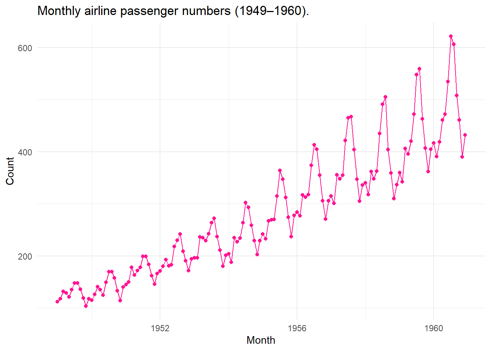
Foundations
Learning outcomes
- Explain what a time series is and how it differs from cross-sectional data, and say why temporal dependence calls for its own methods.
A time series is an ordered sequence of observations on one process. The same observation is recorded at successive time points. Cross-sectional data record many units at a single time point. Thus, their order does not carry information. In a time series, observations are sequentially correlated, so their order carries information. Standard methods assume independent errors whereas a time series needs this dependence to be modelled explicitly.
- Treat an observed series as one realisation of a stochastic process.
An observed series is treated as one realisation of a stochastic process. Each \(y_t\) is a random variable (before being observed), after being observed it becomes a realised value A stochastic process defines a series of these random variables. Thus, the observed data is one sample path out of all the possible paths the same mechanism could have produced. Although different realisations differ, they have the same statistical character. How far different realisations appear from each other is dependent on the underlying statistical process. In a white noise process, different realisations will lie around a fixed level. In a random walk, the different realisations will drift apart, since shocks accumulate.
- Explain what forecasting is, judge when a process is predictable, and keep forecasts, goals and plans separate.
Forecasting is when we use available information to estimate an unobserved quantity. A forecast consists of both a point estimate and a prediction interval since the future value is a random variable (and has some uncertainty associated with it). The predictability of a series is dependent on how well its driver are understood, if sufficient relevant data exists, if the series is stable and if publishing the forecasts will change the outcome. A series can only be predictable if the horizon and sampling interval is stated. Forecasting describes what is likely to happen in the future based on past observations, goal setting describes what we want to happen in the future and planning describes the actions implemented to achieve our goal based on our forecasts.
- Match a forecast horizon to the decision it supports, and read a forecast as a random variable rather than a single number.
The decision determines the forecast horizon (short-term, medium-term, long-term). The horizon then narrows down the choice of model. Uncertainty increases as the forecast horizon increases.
- Identify trend, seasonality, cycle and irregular variation in a plot, and describe the shapes each of them takes in practice.
Trend describes the long-run direction of movement of a series. Seasonality is the repeated pattern, that has a fixed length whereas the cycle refers to longer oscillations in the data often driver by the underlying process. Irregular variation is what remains after removing the trend, seasonality and cycle. Ideally this would just be the innovations but in practice this often still contains short-term dependence. Trend can be linear, exponential, polynomial. Seasonality can be additive, multiplicative or have a single spike.
- Produce the four benchmark forecasts, and evaluate any competing model against them on data it has not seen.
The Mean forecasts averages all past observations and carries that value into the future. The Naive carries the last observational value into the future. The Seasonal naive model is where every future cycle repeats the last observed cycle. The Drift model carries the slope of the line between the first and last observation into the future.
- Use the lag and lead operators, and the algebra built on them, to write models compactly.
The lag operator \(L\) shifts a series back by a period, \(L^k y_t = t_{t-k}\) and the lead operator \(F = L^{-1}\) shifts the series forward, \(F y_t = y_{t+1}\). Both of the operators are linear and we can use this to write models compactly. AR(2) \(y_t = \phi_1 y_{t-1} + \phi_2 y_{t-2} + \varepsilon_t\) can be written as \((1 - \phi_1 L - \phi_2 L^2)y_t = \varepsilon_t\).
- Define weak stationarity, say which of its conditions a given series violates, and choose a transformation that restores it.
A process is weakly stationary if its mean is constant, its variance is constant and finite and the autocorrelation depends only on \(h\) on on \(t\). The Airpassengers dataset is an example of a non-stationary process. To restore stationarity you can transform the data (log/Box-Cox transformation) and difference the series.
- Define white noise, MA, AR, ARMA, ARIMA and SARIMA processes, derive their basic properties, and identify them from an ACF and a PACF.
White noise \(\varepsilon_t \sim WN(0,\sigma^2)\) has \(E(\varepsilon_t)=0\), \(\text{Var}(\varepsilon_t)=\sigma^2\) and \(\gamma(h)=0\) for \(h\neq0\), so its ACF and PACF show no significant spikes.
MA(\(q\)), \(y_t=\mu+\sum_{j=0}^{q}\theta_j\varepsilon_{t-j}\) with \(\theta_0=1\) is always stationary and \(E(y_t)=\mu\). The \(\varepsilon\) terms are uncorrelated, thus \(\gamma(0)=\sigma^2\sum_{j=0}^{q}\theta_j^2\). When the lag is \(h \le q\), \(y_t\) and \(y_{t-h}\) have some common shocks (\(\varepsilon_{t-h},\dots,\varepsilon_{t-q}\)). Only the shared shocks contribute to the covariance, so \(\gamma(h)=\sigma^2\sum_{j=0}^{q-h}\theta_j\theta_{j+h}\) and \(\rho(h)=\gamma(h)/\gamma(0)\). When the lag is \(h>q\), there are no shocks in common, so \(\gamma(h)=0\). Thus, the ACF of an MA(\(q\)) cuts off after lag \(q\).
AR(1), \(y_t=c+\phi y_{t-1}+\varepsilon_t\) is stationary when \(|\phi|<1\). Since the mean is constant, \(\mu=c+\phi\mu\), thus \(E(y_t)=c/(1-\phi)\). \(\varepsilon_t\) is uncorrelated with \(y_{t-1}\), thus \(\gamma(0)=\phi^2\gamma(0)+\sigma^2\), so \(\gamma(0)=\sigma^2/(1-\phi^2)\), which is only finite when \(|\phi|<1\). Multiplying the mean-adjusted equation by \(y_{t-h}-\mu\) and taking expectations gives \(\gamma(h)=\phi\gamma(h-1)\), so \(\rho(h)=\phi^h\). Thus, the ACF of an AR(\(p\)) tails off. Once \(y_{t-1},\dots,y_{t-p}\) are included, further lags add no new information, so the PACF cuts off after lag \(p\).
ARMA(1,1), \(y_t=c+\phi y_{t-1}+\varepsilon_t+\theta\varepsilon_{t-1}\) is stationary when \(|\phi|<1\) and \(E(y_t)=c/(1-\phi)\). The MA term only affects the covariance at lag 1. When the lag is \(h\ge2\), \(\gamma(h)=\phi\gamma(h-1)\), thus the ACF decays like an AR(1) after lag 1. The process can be written as both an MA(\(\infty\)) and an AR(\(\infty\)) (when \(|\theta|<1\)), so neither the ACF nor the PACF cuts off. Thus, both the ACF and PACF of an ARMA(\(p,q\)) tail off.
ARIMA(0,1,0), \(y_t=y_{t-1}+\varepsilon_t\) is the simplest ARIMA (a random walk). Substituting back gives \(y_t=y_0+\sum_{i=1}^t\varepsilon_i\). The \(\varepsilon\) terms are uncorrelated, thus \(\text{Var}(y_t)=t\sigma^2\), which grows with \(t\), so the process is non-stationary. \(\text{Corr}(y_t,y_{t-h})=\sqrt{(t-h)/t}\approx1\), thus the ACF decays very slowly. Differencing gives \((1-L)y_t=\varepsilon_t\), which is white noise. Thus, an ARIMA(\(p,d,q\)) is differenced \(d\) times and the ARMA(\(p,q\)) is then identified from the differenced series.
SARIMA\((p,d,q)(P,D,Q)_s\) applies the same results at the seasonal lags \(s, 2s, \dots\). For example, the seasonal MA(1), \(y_t=\varepsilon_t+\Theta\varepsilon_{t-12}\), only shares a shock with \(y_{t-12}\), thus \(\gamma(12)=\Theta\sigma^2\) and \(\gamma(h)=0\) at every other lag \(h\neq0\). Thus, the ACF of a seasonal MA has spikes at multiples of \(s\) that cut off after lag \(Qs\), and the PACF of a seasonal AR has spikes at multiples of \(s\) that cut off after lag \(Ps\). A slow decay at lags \(s, 2s, \dots\) means a seasonal difference is needed.
- Fit, diagnose and forecast these models in R, following the workflow of Box and Jenkins, and test residuals against the white noise standard.
The Box–Jenkins workflow has four steps: identification, estimation, diagnostic checking and forecasting. I applied this to the AirPassengers series in Section 1. I also followed the full workflow on real data in Project 2, where I fitted and compared AR, MA, ARMA and SARIMA models for Theewaterskloof Dam capacity and sea surface temperature.
- Explain volatility clustering and fit ARCH and GARCH models to it.
Volatility clustering describes how large movements tend to follow large movements and small movements tend to follow small movements. I tested for ARCH effects and fitted ARCH, GARCH and GJR-GARCH models to daily JSE All Share Index returns in Project 3.
What is a time series?
Time series is a single measurement taken at multiple points across time. Technically we are modelling the same thing over and over again (this makes sense as to why there is sequential correlation).
Note
Time series model dependence through sequential observations.
Assumption
Equally spaced measurements.
Assumption
Autocorrelation across time.
Qualitative, Continuous and Discrete Series
Example: Continuous series
Figure 1 plots the number of monthly airline passengers over a 12 year period. This figure clearly illustrates the concepts of seasonality and trend.
Example: Discrete series
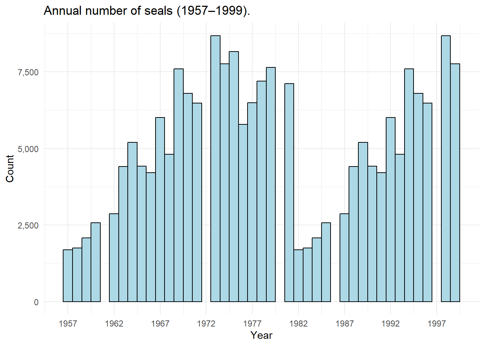
Figure 2 plots the changing number of observed seals over a period of 43 years.
What to do when you have missing observations in a time series?
In discrete time series to deal with missing observations you can express the model in state-space form (ARIMA or Structural Time Series). For a missing observation \(y_t\), skip the update step in the Kalman filter and only run the prediction step. The likelihood is evaluated only over the observed time points.
Kalman filtering
Kalman filtering (linear quadratic estimation) is an algorithm that uses a series of measurements over time to estimate unknown variables, by estimating a joint probability distribution over the variables for each time-step.
In continuous time series, missing observations look like irregularly spaced sampling intervals. You can model the underlying system using Stochastic Differential Equations (CARMA) or you can aggregate the irregular time steps into regular, discrete intervals.
Temporal granularity and the aggregation effect
Aggregating up can either smooth out high-frequency structure (stock returns, etc) or can reveal low-frequency structure (Sales, etc).
One realisation of a stochastic process
Noise in the data introduces different realisations. If your model fits one dataset perfectly then it is overfitting.
The Forecasting Problem
What is forecasting?
Forecasting is a prediction about what will happen in the future based on evidence that we have (with some level of uncertainty). This uncertainty gives rise to forecast intervals (not just point estimates). Goal setting is what we want to happen in the future. Planning helps us reach our goal.
Note
A series can only be called predictable if the interval and horizon are stated.
Forecast \(\rightarrow\) Goal \(\rightarrow\) Plan \(\rightarrow\) Implementation \(\rightarrow\) Outcome \(\rightarrow\) Forecast …
A forecast horizon is how far into the future you try and predict values. When looking at time series data we are looking for stable, informative patterns (not just a lot of data).
A random walk is a process where memory is permanent. Every future shock accumulates endlessly resulting in forecast variance growing linearly. A stationary AR is a process where memory decays geometrically. Shocks die out, forcing the forecast back to the process mean.
Stationary AR(1) process, \(h\) step forecast error variance:
\[ \text{Var}(e_{T+h}) = \sigma^2 \frac{1-\phi^{2h}}{1-\phi^2} \rightarrow \frac{\sigma^2}{1-\phi^2} \quad \text{as } h \rightarrow \infty \]
Note
Forecasts are random variables.
Exploring a Series
The classical decomposition
\[ \begin{aligned} \text{Additive:} \quad y_t &= T_t + S_t + C_t + I_t \\ \text{Multiplicative:} \quad y_t &= T_t \cdot S_t \cdot C_t \cdot I_t \end{aligned} \] The nature of the seasonality in a series (additive, multiplicative or drifting) determines whether log transformation or differencing are required.
Two ways of looking at a series
- Time domain - this looks at previous observations
You would use time domain when estimating predictive conditional expectations (forecasting at time \(t+1\) given \(t, t-1\)), when dealing with short sample sizes.
A lag is the separation between two observations measured in time units.
Note
Plotting a series against its own first lag is the simplest possible diagnostic for dependence.

- Frequency domain - this looks at cycles (oscillations) in the series
You would use frequency domain when identifying hidden cycles/patterns or when analysing long-memory dynamics. This is covered in Spectral Analysis.
The components of a series
Trend is the long run direction of movement. Seasonality is the pattern that repeats at a fixed and known interval. Cycles are long oscillations with no fixed length. Irregular variation (noise) is random variation unexplained by the former.
Time Series Analysis in R
AirPassengers dataset
Code
# Run once — install anything missing
pkgs <- c("tidyverse", "tsibble", "feasts", "fable", "timetk",
"modeltime", "kableExtra", "here")
install.packages(pkgs[!pkgs %in% installed.packages()[, "Package"]])Handling dates and aggregation
AirPassengers is already a time series object but to convert a dataset to a time series object you use: ts(c(), start = c(year, month), frequency = #obs/unit time)
Code
# Read in data:
data(AirPassengers)
# View(AirPassengers)
print(AirPassengers) Jan Feb Mar Apr May Jun Jul Aug Sep Oct Nov Dec
1949 112 118 132 129 121 135 148 148 136 119 104 118
1950 115 126 141 135 125 149 170 170 158 133 114 140
1951 145 150 178 163 172 178 199 199 184 162 146 166
1952 171 180 193 181 183 218 230 242 209 191 172 194
1953 196 196 236 235 229 243 264 272 237 211 180 201
1954 204 188 235 227 234 264 302 293 259 229 203 229
1955 242 233 267 269 270 315 364 347 312 274 237 278
1956 284 277 317 313 318 374 413 405 355 306 271 306
1957 315 301 356 348 355 422 465 467 404 347 305 336
1958 340 318 362 348 363 435 491 505 404 359 310 337
1959 360 342 406 396 420 472 548 559 463 407 362 405
1960 417 391 419 461 472 535 622 606 508 461 390 432Code
# Sum by year:
annual_sum = aggregate(AirPassengers, FUN = sum)
# Mean by year:
annual_mean = aggregate(AirPassengers, FUN = mean)
print(annual_sum)Time Series:
Start = 1949
End = 1960
Frequency = 1
[1] 1520 1676 2042 2364 2700 2867 3408 3939 4421 4572 5140 5714Code
print(annual_mean)Time Series:
Start = 1949
End = 1960
Frequency = 1
[1] 126.6667 139.6667 170.1667 197.0000 225.0000 238.9167 284.0000 328.2500
[9] 368.4167 381.0000 428.3333 476.1667Helper conversions
Code
t <- time(AirPassengers)
# Extract Year and Month
years <- floor(t)
months <- round(12 * (t - years)) + 1
head(data.frame(Decimal = as.numeric(t), Year = years, Month = months)) Decimal Year Month
1 1949.000 1949 1
2 1949.083 1949 2
3 1949.167 1949 3
4 1949.250 1949 4
5 1949.333 1949 5
6 1949.417 1949 6Subsetting with window()
Code
# Extract July 1950 to October 1955
sub_ts <- window(AirPassengers, start = c(1950, 7), end = c(1955, 10))
print(sub_ts) Jan Feb Mar Apr May Jun Jul Aug Sep Oct Nov Dec
1950 170 170 158 133 114 140
1951 145 150 178 163 172 178 199 199 184 162 146 166
1952 171 180 193 181 183 218 230 242 209 191 172 194
1953 196 196 236 235 229 243 264 272 237 211 180 201
1954 204 188 235 227 234 264 302 293 259 229 203 229
1955 242 233 267 269 270 315 364 347 312 274 Lags and Differences
Code
# Shift the time index forward by 1 period (does not move the values)
lagged_ts <- stats::lag(AirPassengers, k = -1)
# First-order differencing (removes linear trend)
diff_ts <- diff(AirPassengers, differences = 1)
# Seasonal differencing (removes a 12-month seasonal pattern)
seasonal_diff_ts <- diff(AirPassengers, lag = 12)
diff_ts Jan Feb Mar Apr May Jun Jul Aug Sep Oct Nov Dec
1949 6 14 -3 -8 14 13 0 -12 -17 -15 14
1950 -3 11 15 -6 -10 24 21 0 -12 -25 -19 26
1951 5 5 28 -15 9 6 21 0 -15 -22 -16 20
1952 5 9 13 -12 2 35 12 12 -33 -18 -19 22
1953 2 0 40 -1 -6 14 21 8 -35 -26 -31 21
1954 3 -16 47 -8 7 30 38 -9 -34 -30 -26 26
1955 13 -9 34 2 1 45 49 -17 -35 -38 -37 41
1956 6 -7 40 -4 5 56 39 -8 -50 -49 -35 35
1957 9 -14 55 -8 7 67 43 2 -63 -57 -42 31
1958 4 -22 44 -14 15 72 56 14 -101 -45 -49 27
1959 23 -18 64 -10 24 52 76 11 -96 -56 -45 43
1960 12 -26 28 42 11 63 87 -16 -98 -47 -71 42Figure 3 illustrates the autocorrelation between AirPassengers and its lag 1.
Combining series
Code
ts_a <- window(AirPassengers, start = c(1950, 1), end = c(1955, 12))
ts_b <- window(AirPassengers, start = c(1955, 1), end = c(1956, 12))
# Union: keeps full range, fills gaps with NA
combined_union <- ts.union(ts_a, ts_b)
# Intersect: keeps only the overlapping months
combined_intersect <- ts.intersect(ts_a, ts_b)
combined_intersect ts_a ts_b
Jan 1955 242 242
Feb 1955 233 233
Mar 1955 267 267
Apr 1955 269 269
May 1955 270 270
Jun 1955 315 315
Jul 1955 364 364
Aug 1955 347 347
Sep 1955 312 312
Oct 1955 274 274
Nov 1955 237 237
Dec 1955 278 278Missing data
Code
has_na <- anyNA(AirPassengers)
cat("Contains missing values:", has_na, "\n")Contains missing values: FALSE Code
# Simple linear interpolation for isolated gaps (base R, no extra packages)
ts_with_gap <- AirPassengers
ts_with_gap[5] <- NA
ts_filled <- ts(approx(time(ts_with_gap),
ts_with_gap,
xout = time(ts_with_gap))$y,
start = start(ts_with_gap),
frequency = frequency(ts_with_gap))
ts_filled Jan Feb Mar Apr May Jun Jul Aug Sep Oct Nov Dec
1949 112 118 132 129 132 135 148 148 136 119 104 118
1950 115 126 141 135 125 149 170 170 158 133 114 140
1951 145 150 178 163 172 178 199 199 184 162 146 166
1952 171 180 193 181 183 218 230 242 209 191 172 194
1953 196 196 236 235 229 243 264 272 237 211 180 201
1954 204 188 235 227 234 264 302 293 259 229 203 229
1955 242 233 267 269 270 315 364 347 312 274 237 278
1956 284 277 317 313 318 374 413 405 355 306 271 306
1957 315 301 356 348 355 422 465 467 404 347 305 336
1958 340 318 362 348 363 435 491 505 404 359 310 337
1959 360 342 406 396 420 472 548 559 463 407 362 405
1960 417 391 419 461 472 535 622 606 508 461 390 432Time series plots
Figure 1 plots the AirPassengers time series with ggplot2, and Figure 4 shows the quicker base R version.

Check attributes of time series
Code
# Check the attributes
cat("Start:", start(AirPassengers), "\n")Start: 1949 1 Code
cat("Frequency:", frequency(AirPassengers), "\n")Frequency: 12 Code
library(ggfortify)
# A first look at structure: naive decomposition (covered in depth in Part B)
decomp <- decompose(AirPassengers)
autoplot(decomp,
ts.colour='deeppink')+
theme_minimal(base_size = 14)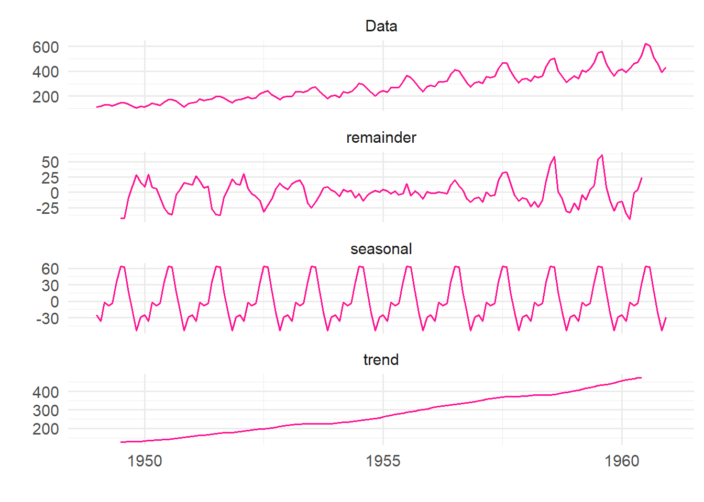
Benchmarks and Forecast Accuracy
The benchmarks applied
Mean - the average of all previous observations is carried into the future.
\[ \hat{y}_{T+h \mid T} = \bar{y} \]
Naive - the last observed value becomes the value that we take into the future.
\[ \hat{y}_{T+h \mid T} = y_T \]
Seasonal naive - the last observed seasonal pattern is carried into the future.
\[ \hat{y}_{T+h \mid T} = y_{T+h-m(k+1)}, \qquad k = \left\lfloor \frac{h-1}{m} \right\rfloor, \]
where \(m\) is the seasonal period and \(k\) is the number of complete seasonal cycles in the forecast period before time \(T+h\).
Drift - The trend of the previous observations is carried into the future.
\[ \hat{y}_{T+h \mid T} = y_T + \frac{h(y_T-y_1)}{T-1} \]
Note
Residuals are for diagnostics (validation). Forecast errors are for evaluation (test).
Cross-validation
In time series successive observations are correlated and their ordering carries information about the data generating process. When performing model validation you cannot have future observations predicting the past.
Temporal leakage (look-ahead-bias) is when future observations enter model estimation, this artificially inflates accuracy.
The forecast origin is the last observation available when the forecast is made.
Note
The test set should be at least as long as the largest horizon of interest.
Strategies
- Walk-forward validation
The forecast origin advances one step at a time.
- Expanding window validation
Every historical observation is kept. The training set grows with all past data. When older data is more informative this method reduces estimation variance.
- Sliding window validation
The training window has a fixed length. The number of training observations stays the same but the forecast origin is moved forward through time. When older data is less informative this method reduces bias.
What is the difference between interpolation and forecasting?
Interpolation estimates a value inside the observed period, so observations on both sides of the gap can be used. Forecasting estimates a value after the forecast origin, so only past observations can be used and the uncertainty grows with the horizon.
Note
Don’t ignore structural breaks when choosing a validation strategy.
Manual cross-validation
Cross-validation is performed using an expanding window approach with a 12-month horizon.
Code
# Load data:
data(AirPassengers)
dat = AirPassengers
# Load libraries:
library(forecast)
n = length(dat) # no. observations
train_n = 60 # no. training data points
h = 12 # forecast horizon
# Initialise error matrix:
names = c('Mean','Naive','Seasonal naive', 'Drift')
splits = n-train_n-h+1
res = matrix(NA,
nrow=(n-h)-train_n+1,
ncol=4,
dimnames=list(NULL,names))
for (i in train_n:(n-h)) {
idx = i-train_n+1
# Subset training data:
train = window(dat,
end=c(1949+(i-1)%/%12,(i-1)%%12+1))
# Extract test data:
test = window(dat,
start=c(1949+i%/%12,i%%12+1),
end=c(1949+(i+h-1)%/%12,(i+h-1)%%12+1))
# Fit model:
fits = list(
Mean = meanf(train,h=h),
Naive = naive(train,h=h),
SNaive = snaive(train,h=h),
Drift = rwf(train,h=h,drift=TRUE)
)
# Extract rmse for each model:
rmse = sapply(fits,\(f) sqrt(mean((as.numeric(test)-as.numeric(f$mean))^2)))
# Store results:
res[idx,] = rmse
}
colMeans(res) Mean Naive Seasonal naive Drift
152.87587 74.08791 39.92124 71.96374 With a 12-month horizon the seasonal naive benchmark has by far the lowest average RMSE, because it is the only benchmark that carries the seasonal pattern into the future. The mean benchmark is the worst, since the series trends upwards and the average of all previous observations is far below the current level.
Cross-validation using tsCV()
tsCV() uses an expanding window by default. Setting window = 60 turns it into a sliding window of 60 months. To compare the two strategies fairly, both use one-step-ahead errors from the same forecast origins (month 60 onwards).
Code
# Forecast functions (rwf needs drift = TRUE, otherwise it is the naive forecast):
fc_funs = list(Mean = function(x, h) meanf(x, h = h),
Naive = function(x, h) naive(x, h = h),
`Seasonal naive` = function(x, h) snaive(x, h = h),
Drift = function(x, h) rwf(x, h = h, drift = TRUE))
cv_rmse = sapply(fc_funs, function(f) {
e_expand = tsCV(AirPassengers, f, h = 1) # expanding window
e_slide = tsCV(AirPassengers, f, h = 1, window = 60) # sliding window
ok = !is.na(e_slide) & !is.na(e_expand) # same forecast origins
c(Expanding = sqrt(mean(e_expand[ok]^2)),
Sliding = sqrt(mean(e_slide[ok]^2)))
})
round(cv_rmse, 2) Mean Naive Seasonal naive Drift
Expanding 153.25 41.53 40.61 41.63
Sliding 102.08 41.53 40.61 41.98The naive and seasonal naive benchmarks give identical errors under both strategies, because they only use the last observation (or the last year) and never look further back than the window. The mean benchmark improves a lot with the sliding window: the series trends upwards, so the mean of the last five years is much closer to the next value than the mean of the whole history (Figure 1). This is the situation where older data is less informative. For drift the two strategies are almost the same. The one-step-ahead errors are also much smaller than the 12-step-ahead errors from the manual cross-validation, which shows why the horizon must be stated when comparing accuracy.
Exercises
- Why is ordinary random k-fold cross-validation inappropriate for forecasting?
If you exclude an observation at time t-1 but use observation t, you are technically predicting the past based on future observations. Future observations must never be used when estimating a forecasting model as this violates a fundamental principle of forecasting: a forecast can only use information that was available at the forecast origin.
- Define temporal leakage.
Future observations enter model estimation. Reported accuracy looks excellent but is unattainable in practice - the future is unknown when real forecasts are made.
- Contrast Walk_Forward, Expanding Window and Sliding Window validation.
In expanding window validation every historical observation is kept. The training set grows with all past data. In sliding window validation the training window has a fixed length. The number of training observations stays the same but the forecast origin is moved forward through time. Walk-forward validation is when the forecast origin advances one step at a time.
- When would Sliding Window outperform Expanding Window?
When data is non-stationary and older data is less informative.
- A firm refits its model daily using only the most recent 250 observations. Which strategy is this?
Sliding window
- Why must temporal ordering be preserved during validation?
Otherwise the model knows things it could not have known at forecasting time. This leads to inflated accuracy that is unattainable in practise.
Operators, Stationarity and White Noise
Lag and lead operators
Lag operator \(L y_t = y_{t-1}\): at time \(t\) it uses the observation recorded at time \(t-1\).
Note
The subscript records where a value came from, not where it is displayed.
Lead operator \(F y_t = y_{t+1}\): at time \(t\) it uses the observation recorded at time \(t+1\), \(F = L^{-1}\).
Lag and lead in R
Code
y <- c(3, 7, 4, 8, 5)
c(NA, y[1:(length(y)-1)]) # lag by hand[1] NA 3 7 4 8Code
dplyr::lag(y, n = 1) # same shift[1] NA 3 7 4 8Code
dplyr::lead(y, n = 1) # lead[1] 7 4 8 5 NACode
lag_twice = dplyr::lag(dplyr::lag(y,n=1),n=1)
lag_twice[1] NA NA 3 7 4Code
dplyr::lag(y,n=2)[1] NA NA 3 7 4
Built in
lag() functions
Don’t get confused between stats::lag() and dplyr::lag(). They do different things!
Differencing
First difference: \[ \Delta{y_{t}} = y_t -y_{t-1} = (1-L)y_t, \]
Seasonal difference (at lag 12): \[ \Delta_{12}y_{t} = y_t -y_{t-12} = (1-L^{12})y_t, \]
Code
# First differences, by hand and with diff().
y2 <- c(10, 6, 9, 12, 7)
y2 - dplyr::lag(y2, 1)[1] NA -4 3 3 -5Code
diff(y2) # Note: no NA added[1] -4 3 3 -5Weak and strict stationarity
A series is weakly (covariance) stationary if
- its mean is constant, \(E(y_t) = \mu\) for all \(t\),
- its variance is finite and constant, \(\text{Var}(y_t) = \sigma^2\) for all \(t\), and
- its autocovariance only depends on the lag, \(\text{Cov}(y_t, y_{t-k}) = \gamma_k\) for all \(t\).
A series is strictly stationary if the joint distribution of \((y_{t_1}, \dots, y_{t_k})\) is the same as that of \((y_{t_1+s}, \dots, y_{t_k+s})\) for every shift \(s\). Strict stationarity (with a finite variance) implies weak stationarity, and for a Gaussian process the two are the same.
AirPassengers violates the first two conditions. The trend and the seasonal pattern mean that \(E(y_t)\) changes over time, and the seasonal swings grow with the level, so \(\text{Var}(y_t)\) is not constant (Figure 1).
When we have a multiplicative model, with expanding variance, we can log-transform it to obtain an additive model. This stabilises the variance (the seasonal swings now have a constant size) but, as seen in Figure 5, the series still has a trend.
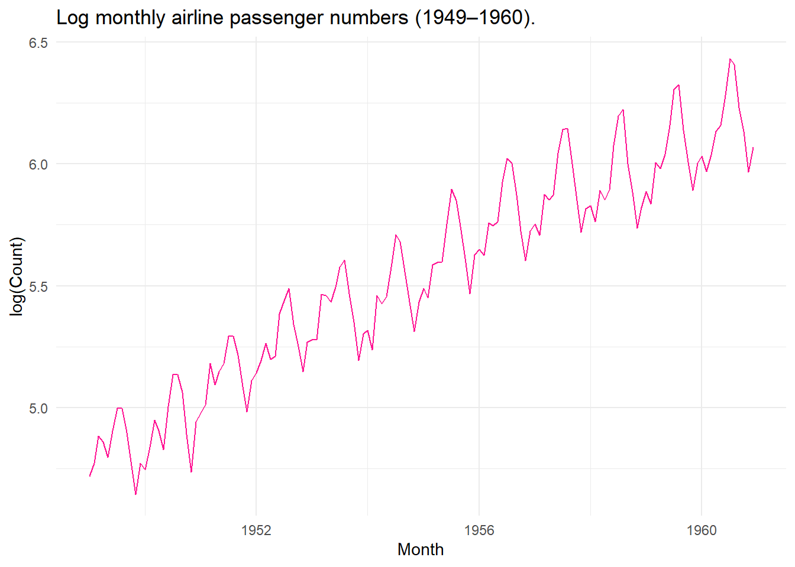
Taking differences between observations removes the linear trend and taking seasonal differences removes the seasonal pattern.
Assumption
No trends present in data.
We can remove both the linear and seasonal trend in the data:
Code
# Check what seasonal and what regular differences are required:
nsdiffs(log_AP)[1] 1Code
ndiffs(log_AP)[1] 1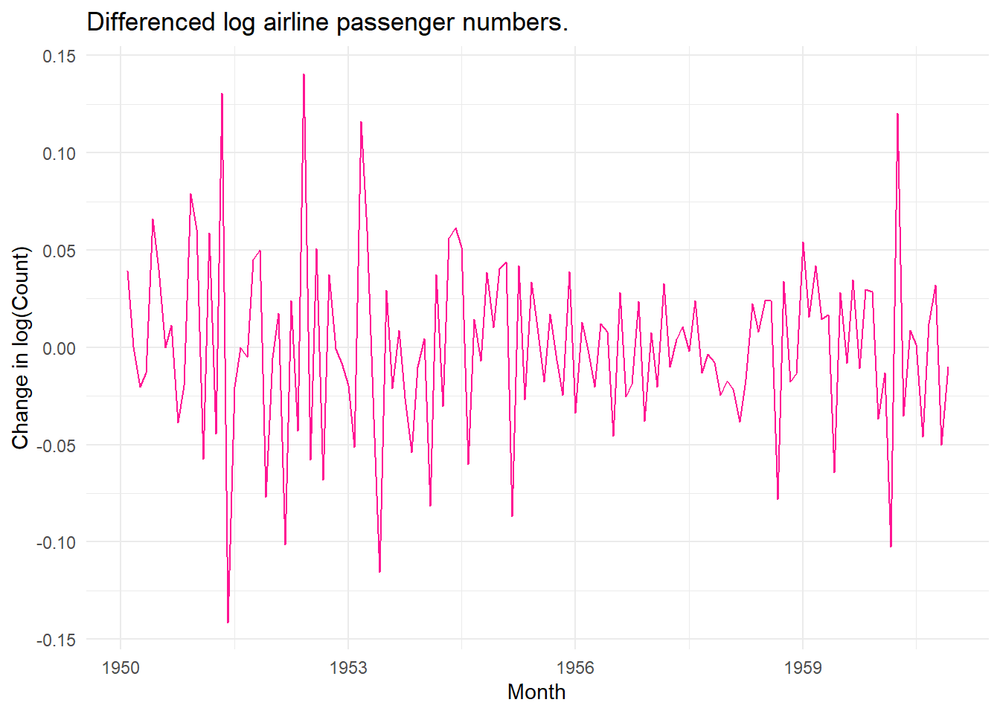
After the log transformation, one seasonal difference and one first difference, the series in Figure 6 fluctuates around zero with a roughly constant variance, so it looks stationary.
White noise
Weak white noise only requires uncorrelated observations. Strict white noise requires iid observations.
White noise cannot be predicted from its own past, whatever its variance.
Note
Indicator variables can be included to remove trends when the series has structural breaks in it.
Linear Models for the Conditional Mean
Although white noise is uncorrelated, a weighted combination of neighbouring white noise is not.
Filtering is the process of building a new series as a weighted combination of the terms of another.
The MA(\(q\)) model
\[ y_t = \mu + \varepsilon_t + \theta_1 \varepsilon_{t-1} + \cdots + \theta_q \varepsilon_{t-q}, \quad \varepsilon_t \sim WN(0,\sigma^2). \]
The moving average model is driven by lagged shocks not lagged observations. A MA(\(q\)) process is stationary for any values of the coefficients, since it is a finite weighted sum of white noise terms with fixed weights. The coefficients must satisfy invertibility.
The AR(\(p\)) model
\[ y_t = c + \phi_1 y_{t-1} + \cdots + \phi_p y_{t-p} + \varepsilon_t, \quad \varepsilon_t \sim WN(0,\sigma^2). \]
For the autoregressive model there is a set of correlation in the structure. The current value of a variable depends linearly on its own past. An AR(\(p\)) process models memory.
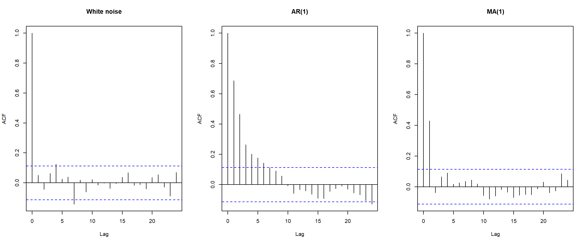
Figure 7 compares the ACFs of the three processes: white noise has no significant autocorrelations, the AR(1) ACF decays geometrically and the MA(1) ACF cuts off after lag 1.
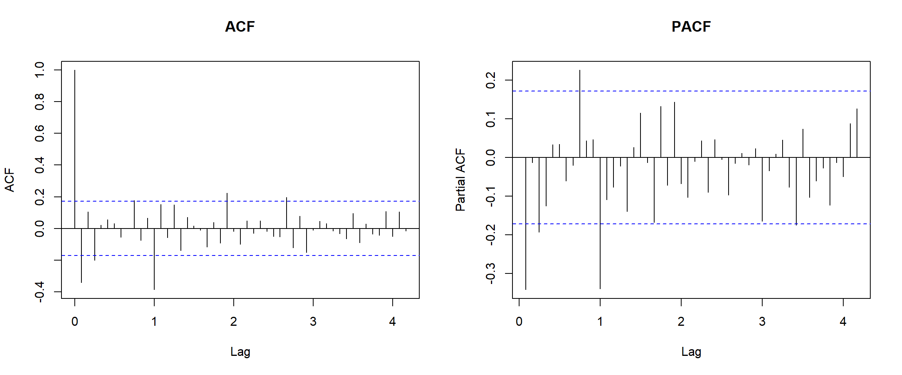
If you are observing spikes outside of the first few this indicates seasonality in the series. Figure 8 suggests that there is still seasonality present in the transformed and differenced AirPassengers dataset, however this could also just be because differencing reduced the number of observations resulting in a more noisy dataset.
The ARMA(\(p,q\)) model
The ARMA model allows for process that show persistence and short lived shocks simultaneously. The series must be stationary.
\[ y_t = c + \sum^p_{i=1} \phi_i y_{t-i} + \varepsilon_t + \sum^q_{j=1} \theta_j \varepsilon_{t-j}, \quad \varepsilon_t \sim WN(0,\sigma^2). \]
this is equivalent to: \(\phi (L)y_t = c + \theta (L) \varepsilon_t.\)
Note
ARMA models are fitted by maximum likelihood due to the moving average part (not OLS).
The ARIMA(\(p,d,q\)) model
The ARIMA model applies \(d\) differences to \(y_t\) and then fits an ARMA(\(p,q\)) to the result.
\[ \phi(L)(1-L)^dy_t = c+ \theta(L)\varepsilon_t \]
| Specification | Equivalent to |
|---|---|
| ARIMA(1,0,0) | AR(1) |
| ARIMA(0,0,1) | MA(1) |
| ARIMA(1,0,1) | ARMA(1,1) |
| ARIMA(0,1,0) | Random walk |
| ARIMA(0,1,0) with c ≠ 0 | Random walk with drift |
| ARIMA(1,1,1) | One difference, then ARMA(1,1) |
Although Table 1 illustrates the special cases of ARIMA, sometimes there is a constant included that must be taken into account.

AirPassengers series with forecasts and prediction intervals for 24 months.
Ljung-Box test
data: Residuals from ARIMA(1,1,1)
Q* = 231.49, df = 22, p-value < 2.2e-16
Model df: 2. Total lags used: 24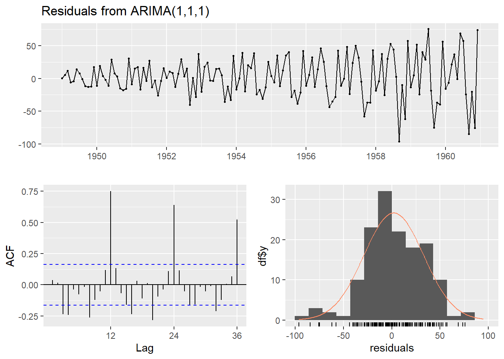
The forecasts in Figure 9 do not repeat the seasonal pattern: after a few months they flatten out, and the intervals become very wide. In Figure 10 we can see that the residuals do not look like white noise, this is because the seasonality hasn’t been removed from the data with an ARIMA(1,1,1) model.
The SARIMA(\(p,d,q\))(\(P,D,Q\text{)}_m\) model
\[ \Phi(L^m)\phi(L)(1-L^m)^D(1-L)^dy_t = \Theta(L^m)\theta(L)\varepsilon_t. \]
When we check an ACF plot of the AirPassengers series, we can see clear seasonality.
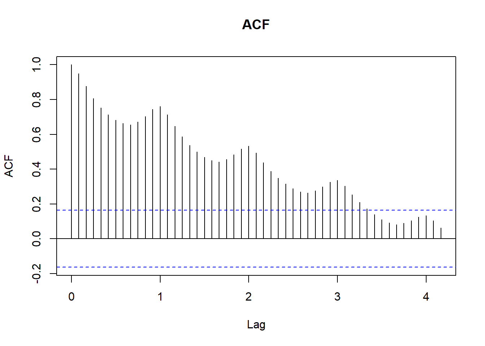
Figure 11 and Figure 10 suggest that we need to model the AirPassengers series with a seasonality component as well.
Code
# Which SARIMA model is the best fit:
best_fit = auto.arima(AirPassengers,
lambda=0,
stepwise=FALSE,
approximation=FALSE)
summary(best_fit)Series: AirPassengers
ARIMA(0,1,1)(0,1,1)[12]
Box Cox transformation: lambda= 0
Coefficients:
ma1 sma1
-0.4018 -0.5569
s.e. 0.0896 0.0731
sigma^2 = 0.001371: log likelihood = 244.7
AIC=-483.4 AICc=-483.21 BIC=-474.77
Training set error measures:
ME RMSE MAE MPE MAPE MASE
Training set 0.05140418 10.15504 7.357553 -0.004079016 2.623636 0.229706
ACF1
Training set -0.03689673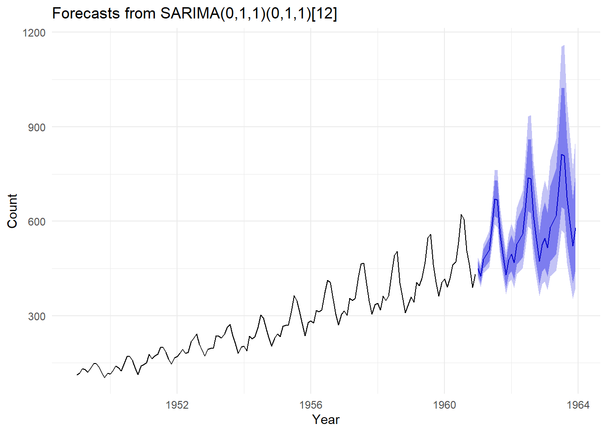
Figure 12 carries the seasonal shape forward while the intervals widen. Because the model is fitted on the log scale, the back-transformed intervals are asymmetric and the seasonal swings grow with the level, as they do in the data. This is the behaviour a seasonal model is fitted for.
Exercises 1
These are Questions 4, 5 and 7 of Time Series Analysis: Exercises 1.
Question 4: Moving average forecasts
The sales of electric knives from January 1991 to April 1992 are given in Table 1.
Code
# Read in data:
knives = ts(c(19, 15, 39, 102, 90, 29, 90, 46, 30, 66, 80, 89, 82, 17, 26, 29),
start = c(1991, 1), frequency = 12)a) Forecasts for May 1992
A \(k\)-month moving average forecasts the next month with the average of the last \(k\) months:
\[ \hat{y}_{T+1 \mid T} = \frac{1}{k}\sum_{j=0}^{k-1} y_{T-j}. \]
Code
k_values = c(3, 5, 7, 9, 11)
# Forecast for May 1992 = mean of the last k observations:
ma_fc = sapply(k_values, function(k) mean(tail(knives, k)))
kable(data.frame(k = k_values, `Forecast for May 1992` = ma_fc, check.names = FALSE),
digits = 2)| k | Forecast for May 1992 |
|---|---|
| 3 | 24.00 |
| 5 | 48.60 |
| 7 | 55.57 |
| 9 | 51.67 |
| 11 | 53.09 |
The forecasts range from 24 (3-month MA) to about 56 (7-month MA). The 3-month MA only uses February to April 1992, which were all very low months, so it gives a much lower forecast than the longer averages.
b) Which \(k\) minimises the errors?
To choose \(k\), each moving average is used to make one-step-ahead forecasts within the data (as if we were standing at each month and forecasting the next). The errors are compared over the same months (December 1991 to April 1992), since the 11-month MA can only start forecasting in December 1991. Comparing over the same period is fairer than letting each \(k\) use all the months it can.
Code
# One-step-ahead MA forecast errors for a given k:
ma_errors = function(y, k) {
y = as.numeric(y)
e = rep(NA, length(y))
for (t in (k + 1):length(y)) {
e[t] = y[t] - mean(y[(t - k):(t - 1)])
}
return(e)
}
err = sapply(k_values, function(k) ma_errors(knives, k))
colnames(err) = paste0("MA(", k_values, ")")
common = 12:16 # December 1991 to April 1992
ma_acc = data.frame(
k = k_values,
`MSE (common)` = colMeans(err[common, ]^2),
`MAE (common)` = colMeans(abs(err[common, ])),
`MSE (all available)` = apply(err, 2, function(e) mean(e^2, na.rm = TRUE)),
`n (all available)` = colSums(!is.na(err)),
check.names = FALSE
)
kable(ma_acc, digits = 1, row.names = FALSE)| k | MSE (common) | MAE (common) | MSE (all available) | n (all available) |
|---|---|---|---|---|
| 3 | 1376.6 | 30.0 | 1484.3 | 13 |
| 5 | 1279.6 | 33.9 | 1031.2 | 11 |
| 7 | 1130.8 | 31.9 | 757.5 | 9 |
| 9 | 1048.8 | 30.1 | 860.8 | 7 |
| 11 | 1313.8 | 34.8 | 1313.8 | 5 |
On the common period the 9-month moving average has the lowest MSE (k = 9), and when every \(k\) uses all the months it can forecast, the 7-month MA has the lowest MSE. So, if the past pattern continues, management should choose a fairly long average of about 7 to 9 months. Short averages react too strongly to single extreme months (for example the jump to 102 in April 1991 and the drop to 17 in February 1992), while very long averages (11 months) are slow to adjust.
However, all of the moving averages forecast badly: the errors are large compared to the sales themselves. With only 16 observations the differences between the values of \(k\) are not reliable, and the series is so erratic that no simple average forecasts it well. A longer series would be needed to check for seasonality, which a moving average cannot capture.
Question 5: Souvenir shop sales
Code
# Read in data (Table 2, one year at a time):
souvenir = ts(c(
1664.81, 2397.53, 2840.71, 3547.29, 3752.96, 3714.74, 4349.61, 3566.34, 5021.82, 6423.48, 7600.6, 19756.21,
2499.81, 5198.24, 7225.14, 4806.03, 5900.88, 4951.34, 6179.12, 4752.15, 5496.43, 5835.1, 12600.08, 28541.72,
4717.02, 5702.63, 9957.58, 5304.78, 6492.43, 6630.8, 7349.62, 8176.62, 8573.17, 9690.5, 15151.84, 34061.01,
5921.1, 5814.58, 12421.25, 6369.77, 7609.12, 7224.75, 8121.22, 7979.25, 8093.06, 8476.7, 17914.66, 30114.41,
4826.64, 6470.23, 9638.77, 8821.17, 8722.37, 10209.48, 11276.55, 12552.22, 11637.39, 13606.89, 21822.11, 45060.69,
7615.03, 9849.69, 14558.4, 11587.33, 9332.56, 13082.09, 16732.78, 19888.61, 23933.38, 25391.35, 36024.8, 80721.71,
10243.24, 11266.88, 21826.84, 17357.33, 15997.79, 18601.53, 26155.15, 28586.52, 30505.41, 30821.33, 46634.38, 104660.67),
start = c(1987, 1), frequency = 12)a) Time plot

Figure 13 shows:
- Strong seasonality. Sales peak every December, when they are roughly two to two and a half times the November sales. This is the Christmas influx of visitors.
- A second, smaller peak in March from 1988 onwards, which matches the surfing festival that started in 1988. In March 1987 (before the festival) there is no peak.
- An upward trend. Sales grow every year, and the growth speeds up in 1992 and 1993, possibly as the shop expanded its premises, range of products and staff.
- Seasonal swings that grow with the level of the series, so the seasonality is multiplicative, not additive.
Unusual fluctuations: 1990 and 1991 break the pattern of growth. December 1990 sales are lower than December 1989, and January and March 1991 are lower than in 1990, so the shop seems to have had a weak period before growing strongly again from mid-1991.
b) Why take logarithms?
The size of the seasonal fluctuations (and of the random variation) increases with the level of the series, so the variance is not constant. Taking logs stabilises the variance and turns the multiplicative pattern into an additive one, \(\log(T_t S_t I_t) = \log T_t + \log S_t + \log I_t\). It also turns the exponential growth into a roughly linear trend. In the bottom panel of Figure 13 the December peaks have about the same height every year, which a linear model (with constant variance) can describe.
c) Annual totals and a linear regression
Code
# Total sales per year and their logs:
annual_tot = aggregate(souvenir, FUN = sum)
annual_df = data.frame(
year = as.numeric(time(annual_tot)),
total = as.numeric(annual_tot),
log_total = log(as.numeric(annual_tot))
)
kable(annual_df, digits = 4, col.names = c("Year", "Total sales", "log(Total sales)"))| Year | Total sales | log(Total sales) |
|---|---|---|
| 1987 | 64636.10 | 11.0765 |
| 1988 | 93986.04 | 11.4509 |
| 1989 | 121808.00 | 11.7102 |
| 1990 | 126059.87 | 11.7445 |
| 1991 | 164644.51 | 12.0115 |
| 1992 | 268717.73 | 12.5014 |
| 1993 | 362657.07 | 12.8012 |
Code
# Fit linear regression:
fit_log = lm(log_total ~ year, data = annual_df)
summary(fit_log)
Call:
lm(formula = log_total ~ year, data = annual_df)
Residuals:
1 2 3 4 5 6 7
-0.01119 0.09260 0.08131 -0.15496 -0.15852 0.06077 0.08998
Coefficients:
Estimate Std. Error t value Pr(>|t|)
(Intercept) -526.56801 46.43933 -11.34 9.33e-05 ***
year 0.27059 0.02334 11.60 8.37e-05 ***
---
Signif. codes: 0 '***' 0.001 '**' 0.01 '*' 0.05 '.' 0.1 ' ' 1
Residual standard error: 0.1235 on 5 degrees of freedom
Multiple R-squared: 0.9641, Adjusted R-squared: 0.957
F-statistic: 134.4 on 1 and 5 DF, p-value: 8.374e-05
The slope is \(\hat{\beta}_1 =\) 0.2706, so total sales grow by a factor of \(e^{\hat{\beta}_1} =\) 1.311 per year, about 31% per year. The line fits well (\(R^2 =\) 0.964), but Figure 14 shows the 1990 dip and the faster growth in 1992 and 1993, so the points are not scattered randomly around the line.
d) Predictions for 1994, 1995 and 1996
Code
new_years = data.frame(year = 1994:1996)
pred_log = predict(fit_log, newdata = new_years, interval = "prediction", level = 0.95)
kable(data.frame(Year = 1994:1996, pred_log), digits = 4,
col.names = c("Year", "Predicted log(total)", "Lower 95%", "Upper 95%"))| Year | Predicted log(total) | Lower 95% | Upper 95% |
|---|---|---|---|
| 1994 | 12.9818 | 12.5662 | 13.3974 |
| 1995 | 13.2524 | 12.7995 | 13.7053 |
| 1996 | 13.5230 | 13.0283 | 14.0177 |
The prediction intervals use the \(t\) distribution with \(7 - 2 = 5\) degrees of freedom and include both the uncertainty in the regression line and the residual variance. They widen as we move further from the observed years.
e) Back to the original scale
Code
pred_raw = exp(pred_log)
kable(data.frame(Year = 1994:1996, pred_raw), digits = 0, format.args = list(big.mark = ","),
col.names = c("Year", "Predicted total sales", "Lower 95%", "Upper 95%"))| Year | Predicted total sales | Lower 95% | Upper 95% |
|---|---|---|---|
| 1,994 | 434,443 | 286,706 | 658,309 |
| 1,995 | 569,439 | 362,039 | 895,651 |
| 1,996 | 746,383 | 455,122 | 1,224,040 |
Exponentiating the end points of the interval gives a valid 95% prediction interval on the original scale, because \(\exp()\) is monotonic. The intervals are no longer symmetric around the point forecast: the upper limit is much further from the forecast than the lower limit. The back-transformed point forecast \(\exp(\hat{y})\) is the median of the forecast distribution, not the mean. The mean would be slightly larger, \(\exp(\hat{y} + \hat{\sigma}^2/2)\).
The intervals are very wide (the 1996 upper limit is more than double the lower limit), which is expected with only seven annual totals. Using the monthly data with a seasonal model would use much more of the information.
Question 7: Strikes in the USA
Code
# Read in data:
strikes = ts(c(4737, 5117, 5091, 3468, 4320, 3825, 3673, 3694, 3708, 3333,
3367, 3614, 3362, 3655, 3963, 4405, 4595, 5045, 5700, 5716,
5138, 5010, 5353, 6074, 5031, 5648, 5506, 4230, 4827, 3885),
start = 1951)a) Why ARIMA(0,1,1)?
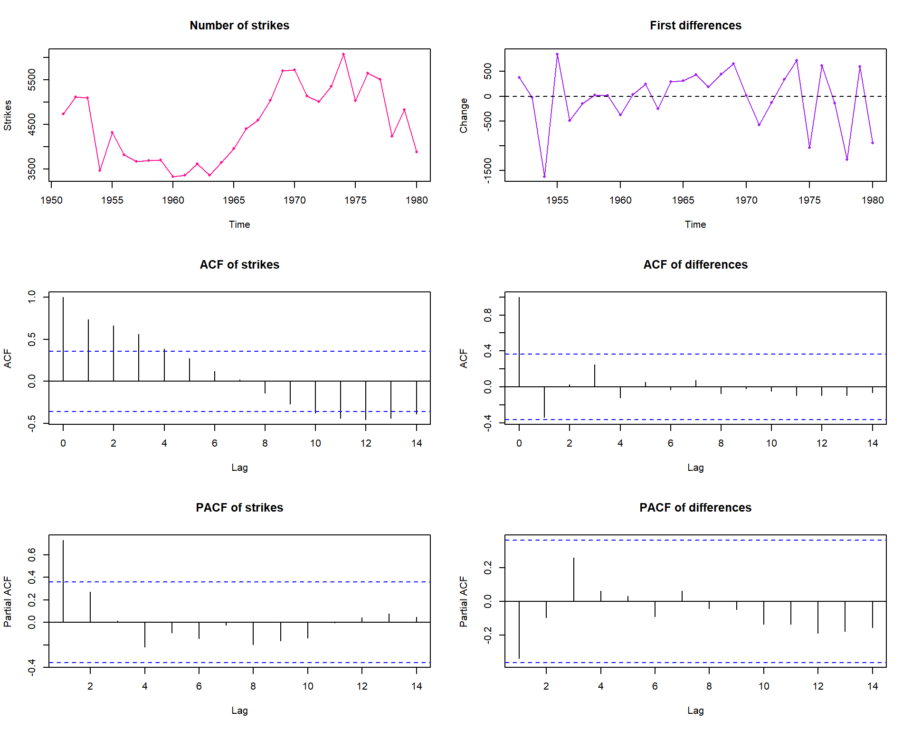
In Figure 15 the series wanders with long swings (down to about 3,300 in the early 1960s, up to about 6,000 in the mid-1970s) and does not return to a fixed mean, and its ACF decays slowly. So the series is not stationary and should be differenced once. After differencing, the series fluctuates around zero. The ACF of the differences has its largest value at lag 1, which is negative (about -0.34), and is small after lag 1. A single spike at lag 1 in the ACF with nothing after it is the signature of an MA(1), so an MA(1) for the differences, i.e. an ARIMA(0,1,1) for the series, is appropriate.
With only 29 differences the 95% bounds are wide (\(\pm 1.96/\sqrt{29} \approx \pm 0.36\)), so the lag 1 spike is close to the bounds and the evidence for the MA term is not strong. ARIMA(0,1,1) is still a sensible and parsimonious choice, and a negative lag 1 autocorrelation after differencing is a common sign that the MA term is needed.
b) Backshift notation
\[ (1-B)Y_t = (1+\theta_1 B)e_t \quad \Leftrightarrow \quad Y_t = Y_{t-1} + e_t + \theta_1 e_{t-1}, \]
where \(e_t \sim WN(0, \sigma^2)\). This is the sign convention used by R. Some textbooks write \((1 - \theta B)e_t\) instead, in which case the estimate has the opposite sign.
c) Fit and check the residuals
Code
fit_strikes = Arima(strikes, order = c(0, 1, 1))
summary(fit_strikes)Series: strikes
ARIMA(0,1,1)
Coefficients:
ma1
-0.3094
s.e. 0.1515
sigma^2 = 330817: log likelihood = -224.98
AIC=453.95 AICc=454.41 BIC=456.69
Training set error measures:
ME RMSE MAE MPE MAPE MASE ACF1
Training set -28.86394 555.6637 419.4877 -1.66885 9.60312 0.9207647 -0.06000998
Ljung-Box test
data: Residuals from ARIMA(0,1,1)
Q* = 2.4792, df = 5, p-value = 0.7796
Model df: 1. Total lags used: 6
The estimated MA coefficient is \(\hat{\theta}_1 =\) -0.309 with \(\hat{\sigma} =\) 575.2. In Figure 16 the residuals fluctuate around zero with no obvious pattern, none of the autocorrelations are significant and the Ljung-Box test does not reject the null hypothesis of white noise (p = 0.78). Thus, the model is satisfactory. The histogram is rough, but with 30 observations it is hard to judge normality.
d) Forecasts by hand
From the model, \(Y_{T+1} = Y_T + e_{T+1} + \theta_1 e_T\). Future errors have expected value zero, and \(e_T\) is estimated by the last residual, so
\[ \hat{Y}_{T+1 \mid T} = Y_T + \hat{\theta}_1 \hat{e}_T, \qquad \hat{Y}_{T+2 \mid T} = \hat{Y}_{T+3 \mid T} = \hat{Y}_{T+1 \mid T}, \]
since for \(h \geq 2\) both \(e_{T+h}\) and \(e_{T+h-1}\) are future errors. The forecasts are therefore flat. The forecast variance is \(\sigma^2[1 + (h-1)(1+\theta_1)^2]\), which grows linearly with \(h\).
Code
theta_hat = coef(fit_strikes)["ma1"]
sigma2_hat = fit_strikes$sigma2
y_T = tail(strikes, 1) # strikes in 1980
e_T = tail(residuals(fit_strikes), 1)
# By hand:
fc_1 = as.numeric(y_T + theta_hat * e_T)
fc_hand = rep(fc_1, 3)
se_hand = sqrt(sigma2_hat * (1 + (0:2) * (1 + theta_hat)^2))
# With R:
fc_strikes = forecast(fit_strikes, h = 3, level = 95)
kable(data.frame(
Year = 1981:1983,
`By hand` = fc_hand,
`Lower (hand)` = fc_hand - qnorm(0.975) * se_hand,
`Upper (hand)` = fc_hand + qnorm(0.975) * se_hand,
R = as.numeric(fc_strikes$mean),
`Lower (R)` = as.numeric(fc_strikes$lower),
`Upper (R)` = as.numeric(fc_strikes$upper),
check.names = FALSE
), digits = 1)| Year | By hand | Lower (hand) | Upper (hand) | R | Lower (R) | Upper (R) |
|---|---|---|---|---|---|---|
| 1981 | 4157.3 | 3030.0 | 5284.6 | 4157.3 | 3030.0 | 5284.6 |
| 1982 | 4157.3 | 2787.3 | 5527.3 | 4157.3 | 2787.3 | 5527.3 |
| 1983 | 4157.3 | 2581.6 | 5733.1 | 4157.3 | 2581.6 | 5733.1 |
The last observation is \(Y_{1980} = 3885\) and the last residual is \(\hat{e}_{1980} =\) -880.2. Since \(\hat{\theta}_1 < 0\), part of the large drop in 1980 is treated as a temporary shock, so the forecast for 1981 is 4157 strikes, slightly above the 1980 value. The forecasts by hand agree with those from forecast().
e) Plot with prediction intervals

Figure 17 shows the flat forecasts and the prediction intervals widening with the horizon. With only three steps ahead the intervals are already wide (roughly \(\pm 1{,}100\) strikes at \(h = 1\)), which reflects how much the series moves from one year to the next.
Reflection. Questions 4 and 5 showed me that simple methods (moving averages, a regression on log totals) can be done by hand, but they throw away information: the moving average ignores seasonality and the annual totals ignore the monthly pattern. Question 7 was the first time I wrote out an ARIMA forecast by hand. Seeing that the MA term only affects the first forecast, and that the forecasts are flat after that, made the forecast functions of ARIMA models much clearer.
Conditional Variance Models
All of the models above model the conditional mean and assume a constant variance. For many series, especially financial returns, the variance is not constant: large changes tend to follow large changes and small changes follow small changes (volatility clustering). A conditional variance model has a mean equation and a variance equation:
\[ y_t = \mu_t + a_t, \qquad a_t = \sigma_t\varepsilon_t, \qquad \varepsilon_t \overset{iid}{\sim} D(0,1), \]
\[ \text{ARCH}(q): \ \sigma_t^2 = \omega + \sum_{i=1}^{q}\alpha_i a_{t-i}^2, \qquad \text{GARCH}(p,q): \ \sigma_t^2 = \omega + \sum_{i=1}^{q}\alpha_i a_{t-i}^2 + \sum_{j=1}^{p}\beta_j \sigma_{t-j}^2, \]
with \(\omega > 0\) and \(\alpha_i, \beta_j \geq 0\) so that the variance is always positive. In a GARCH(1,1), \(\alpha_1 + \beta_1\) is the persistence: if it is below 1, volatility reverts to the long-run variance \(\omega/(1 - \alpha_1 - \beta_1)\). I applied these models to JSE returns in Project 3.
R Lab: Fitting GARCH models
The Tbrate data set (package Ecdat) has three quarterly series from 1950 to 1996: the 91-day T-bill rate, the log of real GDP and the inflation rate. Only the T-bill rate is used here.
Code
# r = the 91-day treasury bill rate
# y = the log of real GDP
# pi = the inflation rate
Tbill = Tbrate[,1]
Del.Tbill = diff(Tbill)Problem 1
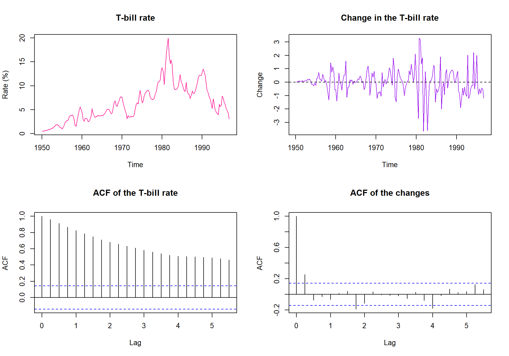
Code
# ADF test: H0 = unit root (non-stationary)
# KPSS test: H0 = (level) stationary
adf_tbill = adf.test(Tbill)
adf_del = adf.test(Del.Tbill)
kpss_tbill = kpss.test(Tbill)
kpss_del = kpss.test(Del.Tbill)
unit_tbl = data.frame(
Series = c("Tbill", "Del.Tbill"),
`ADF statistic` = c(adf_tbill$statistic, adf_del$statistic),
`ADF p-value` = c(adf_tbill$p.value, adf_del$p.value),
`KPSS statistic` = c(kpss_tbill$statistic, kpss_del$statistic),
`KPSS p-value` = c(kpss_tbill$p.value, kpss_del$p.value),
check.names = FALSE
)
kable(unit_tbl, digits = 3)| Series | ADF statistic | ADF p-value | KPSS statistic | KPSS p-value |
|---|---|---|---|---|
| Tbill | -1.925 | 0.608 | 2.259 | 0.01 |
| Del.Tbill | -5.298 | 0.010 | 0.158 | 0.10 |
The two tests have opposite null hypotheses
The ADF test has the null hypothesis of a unit root (non-stationary), so a small p-value is evidence for stationarity. The KPSS test has the null hypothesis of stationarity, so a small p-value is evidence against stationarity. tseries truncates the p-values to the range 0.01 to 0.1 (KPSS) or 0.01 to 0.99 (ADF), so a value of 0.01 or 0.1 means “at most” or “at least”.
Which series are stationary? The T-bill rate is not stationary. In Figure 18 it rises from about 1% in the early 1950s to a peak of around 15% in the early 1980s and then falls, without returning to a fixed mean, and its ACF decays very slowly. The ADF test does not reject a unit root (p = 0.608) and the KPSS test rejects stationarity (p = 0.01). The changes, Del.Tbill, fluctuate around zero and their ACF dies out after a few lags. For the changes the ADF test rejects a unit root (p = 0.01) and the KPSS test does not reject stationarity (p = 0.1). So I treat Del.Tbill as stationary and use it below.
Heteroskedasticity in Del.Tbill. The changes are not homoskedastic, even though their mean looks constant:
- Volatility clustering. The changes are small and calm in the 1950s and 1960s and very volatile around 1979 to 1982, when US monetary policy targeted the money supply instead of interest rates. Large changes follow large changes.
- Level dependence. The variance of the changes is largest when the rate itself is high. The size of a change seems to be proportional to the level of the rate, which is a reason to model relative (log) changes (Problem 4).
Problem 2
Since Tbill is not stationary, the model is fitted to Del.Tbill.
Code
garch.model.Tbill = garchFit(formula = ~arma(1,0) + garch(1,0), data = Del.Tbill, trace = FALSE)
summary(garch.model.Tbill)
Title:
GARCH Modelling
Call:
garchFit(formula = ~arma(1, 0) + garch(1, 0), data = Del.Tbill,
trace = FALSE)
Mean and Variance Equation:
data ~ arma(1, 0) + garch(1, 0)
<environment: 0x0000023458a74150>
[data = Del.Tbill]
Conditional Distribution:
norm
Coefficient(s):
mu ar1 omega alpha1
0.083497 0.241635 0.338157 0.834828
Std. Errors:
based on Hessian
Error Analysis:
Estimate Std. Error t value Pr(>|t|)
mu 0.08350 0.05391 1.549 0.121395
ar1 0.24163 0.07280 3.319 0.000902 ***
omega 0.33816 0.06145 5.503 3.73e-08 ***
alpha1 0.83483 0.24295 3.436 0.000590 ***
---
Signif. codes: 0 '***' 0.001 '**' 0.01 '*' 0.05 '.' 0.1 ' ' 1
Log Likelihood:
-223.7818 normalized: -1.196694
Description:
Mon Oct 19 21:33:28 2026 by user: isabe
Standardised Residuals Tests:
Statistic p-Value
Jarque-Bera Test R Chi^2 26.966162 1.394352e-06
Shapiro-Wilk Test R W 0.957289 1.957134e-05
Ljung-Box Test R Q(10) 10.827502 3.711143e-01
Ljung-Box Test R Q(15) 13.108154 5.939444e-01
Ljung-Box Test R Q(20) 16.111444 7.096868e-01
Ljung-Box Test R^2 Q(10) 12.183130 2.729873e-01
Ljung-Box Test R^2 Q(15) 14.317430 5.016035e-01
Ljung-Box Test R^2 Q(20) 17.287544 6.342310e-01
LM Arch Test R TR^2 9.685432 6.435358e-01
Information Criterion Statistics:
AIC BIC SIC HQIC
2.436169 2.505284 2.435279 2.464174 Code
garch.model.Tbill@fit$matcoef Estimate Std. Error t value Pr(>|t|)
mu 0.08349652 0.05390549 1.548943 1.213955e-01
ar1 0.24163450 0.07279700 3.319292 9.024598e-04
omega 0.33815662 0.06144724 5.503203 3.729535e-08
alpha1 0.83482811 0.24295106 3.436199 5.899382e-04Which model is fitted? arma(1,0) + garch(1,0) is an AR(1) mean equation with ARCH(1) errors and a normal conditional distribution. Using the parameter names from the R output:
\[ \begin{aligned} \Delta r_t &= \texttt{mu} + \texttt{ar1}\,\Delta r_{t-1} + a_t, \qquad a_t = \sigma_t \varepsilon_t, \quad \varepsilon_t \overset{iid}{\sim} N(0,1), \\ \sigma_t^2 &= \texttt{omega} + \texttt{alpha1}\, a_{t-1}^2, \end{aligned} \]
where \(\Delta r_t\) is the change in the T-bill rate. In fGarch, mu is the intercept of the AR equation, so the mean of \(\Delta r_t\) is \(\texttt{mu}/(1 - \texttt{ar1})\).
Code
est = garch.model.Tbill@fit$matcoef[, 1]
kable(data.frame(Parameter = names(est), Estimate = est), digits = 4, row.names = FALSE)| Parameter | Estimate |
|---|---|
| mu | 0.0835 |
| ar1 | 0.2416 |
| omega | 0.3382 |
| alpha1 | 0.8348 |
The estimates are \(\widehat{\texttt{mu}} =\) 0.0835, \(\widehat{\texttt{ar1}} =\) 0.242, \(\widehat{\texttt{omega}} =\) 0.3382 and \(\widehat{\texttt{alpha1}} =\) 0.835.
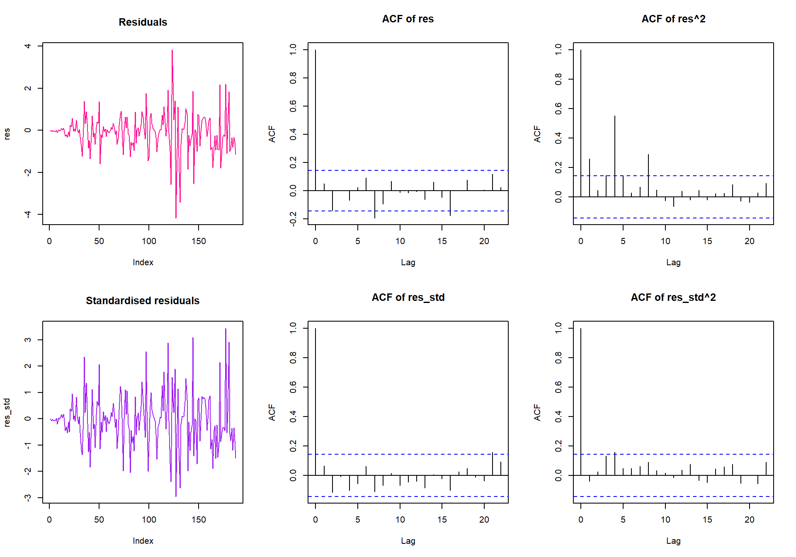
Code
# Ljung-Box tests at lag 10:
lb_tbl = data.frame(
Series = c("res", "res^2", "res_std", "res_std^2"),
`p-value` = c(Box.test(res, lag = 10, type = "Ljung-Box")$p.value,
Box.test(res^2, lag = 10, type = "Ljung-Box")$p.value,
Box.test(res_std, lag = 10, type = "Ljung-Box")$p.value,
Box.test(res_std^2, lag = 10, type = "Ljung-Box")$p.value),
check.names = FALSE
)
kable(lb_tbl, digits = 4)| Series | p-value |
|---|---|
| res | 0.0747 |
| res^2 | 0.0000 |
| res_std | 0.3711 |
| res_std^2 | 0.2730 |
Problem 3
acf(res) plots the sample autocorrelations of the ordinary residuals \(\hat{a}_t\). It checks the mean equation: if the AR(1) captures the dependence in the changes, these autocorrelations should all be close to zero. A few small spikes would suggest that the mean equation could be improved, but the main structure has been removed.
acf(res^2) plots the autocorrelations of the squared residuals. Since \(E(a_t^2 \mid \text{past}) = \sigma_t^2\), autocorrelation in \(\hat{a}_t^2\) means that the variance depends on the past, i.e. there are ARCH/GARCH effects in the series. The large positive autocorrelations here show that volatility clustering is present, so a constant-variance model would not be adequate. (The raw residuals are not standardised, so this plot describes the data rather than the fit of the variance equation.)
acf(res_std^2) plots the autocorrelations of the squared standardised residuals \(\hat{\varepsilon}_t^2 = (\hat{a}_t/\hat{\sigma}_t)^2\). This checks the variance equation: if the ARCH(1) model had captured all the volatility clustering, there would be no autocorrelation left. Remaining significant autocorrelations show that ARCH(1), which only remembers one squared shock, is not enough. Volatility in interest rates is persistent, so a GARCH(1,1) (which remembers all past shocks with geometrically declining weights) is a natural next step.
garch.model.Tbill@sigma.t contains the fitted conditional standard deviations \(\hat{\sigma}_t\), one for every time point. Dividing the residuals by sigma.t gives the standardised residuals.
plot(res_std) should look like white noise with variance 1 if the model is correct. Instead there are some very large standardised residuals (outliers), especially around the early 1980s, and the spread is not constant. This suggests that the variance model has not fully captured the changing volatility, and that the normal distribution has tails that are too light. A Student-\(t\) distribution for \(\varepsilon_t\) would be more appropriate.
Problem 4
Code
del.log.tbill = diff(log(Tbill))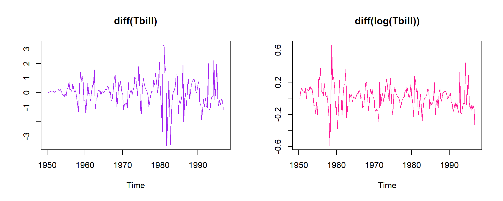
Code
# Candidate ARMA/GARCH models for the log changes:
fit_arch_n = garchFit(~arma(1,0) + garch(1,0), data = del.log.tbill, trace = FALSE)
fit_garch_n = garchFit(~arma(1,0) + garch(1,1), data = del.log.tbill, trace = FALSE)
fit_garch_t = garchFit(~arma(1,0) + garch(1,1), data = del.log.tbill,
cond.dist = "std", trace = FALSE)
log_fits = list("AR(1)/ARCH(1), normal" = fit_arch_n,
"AR(1)/GARCH(1,1), normal" = fit_garch_n,
"AR(1)/GARCH(1,1), t" = fit_garch_t)
# Information criteria (fGarch divides these by the sample size):
ic_log = t(sapply(log_fits, function(f) f@fit$ics[c("AIC", "BIC")]))
kable(ic_log, digits = 4)| AIC | BIC | |
|---|---|---|
| AR(1)/ARCH(1), normal | -1.0769 | -1.0078 |
| AR(1)/GARCH(1,1), normal | -1.1661 | -1.0797 |
| AR(1)/GARCH(1,1), t | -1.2081 | -1.1044 |
Code
best_log_name = rownames(ic_log)[which.min(ic_log[, "BIC"])]
best_log = log_fits[[best_log_name]]
best_log@fit$matcoef Estimate Std. Error t value Pr(>|t|)
mu 0.010378358 0.008583423 1.209116 2.266181e-01
ar1 0.435685551 0.078306725 5.563833 2.639123e-08
omega 0.004441368 0.003405769 1.304072 1.922091e-01
alpha1 0.432444542 0.267378924 1.617347 1.058034e-01
beta1 0.540476705 0.176994495 3.053636 2.260865e-03
shape 3.213170529 1.156617955 2.778074 5.468213e-03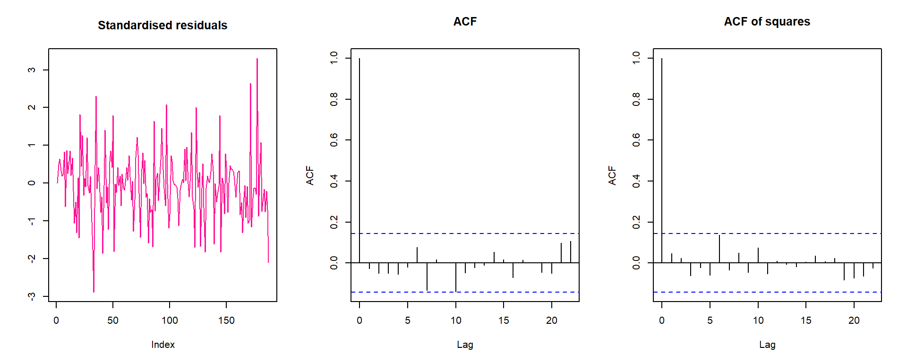
Code
c(LB_z = Box.test(z_log, lag = 10, type = "Ljung-Box")$p.value,
LB_z2 = Box.test(z_log^2, lag = 10, type = "Ljung-Box")$p.value) LB_z LB_z2
0.4164010 0.6361429 BIC selects the AR(1)/GARCH(1,1), t model. In Figure 20 the log changes look much more homogeneous than the raw changes: the very large changes of the early 1980s are no longer as dominant, because a change of one percentage point is a much smaller relative change when the rate is 15% than when it is 3%. The standardised residuals of the selected model (Figure 21) show little remaining autocorrelation in either the residuals or their squares.
Advantages of working with diff(log(Tbill)):
- It removes most of the level dependence in the variance. Relative changes have a more stable variance over time, so the GARCH model only has to describe volatility clustering, not the dependence of the variance on the level.
- The log changes are approximately percentage changes, which are easier to compare across periods with very different interest rates.
- Forecasts made on the log scale and transformed back can never give a negative interest rate.
Black Monday
On Black Monday (19 October 1987) the return on the S&P 500 was \(-22.8\%\). The question is: given the information available on the previous trading day, what was the conditional probability of a return this small or smaller?
Code
library(Ecdat)
data(SP500, package = "Ecdat")
returnBlMon = SP500$r500[1805]
x = SP500$r500[(1804-2*253+1):1804] # the last two years before Black Monday
# AR(1)/GARCH(1,1) with a standardised t distribution:
results = garchFit(~arma(1,0) + garch(1,1), data = x, cond.dist = "std", trace = FALSE)
dfhat = as.numeric(results@fit$par[6])
forecast_bm = predict(results, n.ahead = 1)
results@fit$matcoef Estimate Std. Error t value Pr(>|t|)
mu 1.306113e-03 3.808426e-04 3.429535 6.046160e-04
ar1 8.267252e-02 4.143027e-02 1.995462 4.599257e-02
omega 1.082893e-05 8.635697e-06 1.253973 2.098518e-01
alpha1 4.568420e-02 3.308734e-02 1.380715 1.673665e-01
beta1 8.544624e-01 9.782237e-02 8.734836 0.000000e+00
shape 4.106972e+00 9.338203e-01 4.398033 1.092365e-05Code
forecast_bm meanForecast meanError standardDeviation
1 -0.003155442 0.01705332 0.01705332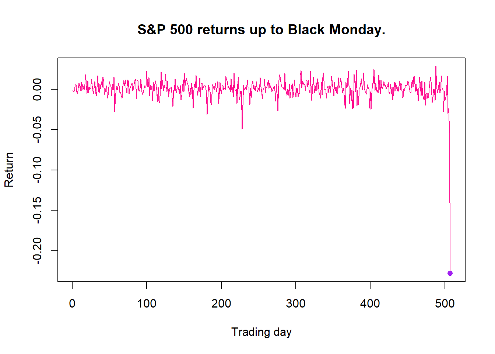
The conditional distribution of the return on Black Monday is \(\hat{\mu} + \hat{\sigma}\varepsilon\), where \(\varepsilon\) has a standardised \(t\) distribution with \(\hat{\nu}\) degrees of freedom. pstd() uses exactly this parameterisation (mean, standard deviation and \(\nu\)):
Code
prob_t = pstd(-0.228, mean = forecast_bm$meanForecast, sd = forecast_bm$standardDeviation, nu = dfhat)
# For comparison, under a normal distribution with the same mean and standard deviation:
prob_norm = pnorm(-0.228, mean = forecast_bm$meanForecast, sd = forecast_bm$standardDeviation)
c(t_distribution = prob_t, normal_distribution = prob_norm) t_distribution normal_distribution
2.10615e-05 5.36709e-40 The forecast standard deviation for Black Monday was 0.0171, so a return of \(-0.228\) was about -13 conditional standard deviations below the forecast mean. Under the fitted model (with \(\hat{\nu} =\) 4.11) the conditional probability of a return of \(-22.8\%\) or less was 2.11^{-5}. This is tiny, but far larger than under a normal distribution (5.37^{-40}), which shows how much the heavy tails of the \(t\) distribution matter for extreme events.
Standardised residuals.
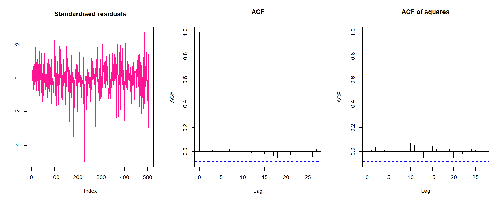
Code
c(LB_z = Box.test(z_bm, lag = 10, type = "Ljung-Box")$p.value,
LB_z2 = Box.test(z_bm^2, lag = 10, type = "Ljung-Box")$p.value) LB_z LB_z2
0.9225475 0.8883752 If the AR(1)/GARCH(1,1) model is adequate, the standardised residuals and their squares should be uncorrelated. In Figure 23 the autocorrelations stay (mostly) within the bounds and the Ljung-Box p-values are above 0.05, so the model fits the two years before Black Monday adequately. A good fit to the past does not mean that the model could anticipate the crash: Black Monday was far outside anything in the previous two years (Figure 22).
Would an AR(1)/ARCH(1) model be adequate? Would an AR(1) with Gaussian errors?
Code
results_arch = garchFit(~arma(1,0) + garch(1,0), data = x, cond.dist = "std", trace = FALSE)
ar1_bm = arima(x, order = c(1, 0, 0))
n_x = length(x)
# fGarch reports AIC divided by n, so multiply by n:
kable(data.frame(
Model = c("AR(1)/GARCH(1,1), t", "AR(1)/ARCH(1), t", "AR(1), Gaussian"),
AIC = c(results@fit$ics["AIC"] * n_x,
results_arch@fit$ics["AIC"] * n_x,
AIC(ar1_bm)),
`LB p-value (squared std. residuals)` = c(
Box.test(residuals(results, standardize = TRUE)^2, lag = 10, type = "Ljung-Box")$p.value,
Box.test(residuals(results_arch, standardize = TRUE)^2, lag = 10, type = "Ljung-Box")$p.value,
Box.test(residuals(ar1_bm)^2, lag = 10, type = "Ljung-Box")$p.value),
check.names = FALSE
), digits = 3)| Model | AIC | LB p-value (squared std. residuals) |
|---|---|---|
| AR(1)/GARCH(1,1), t | -3298.428 | 0.888 |
| AR(1)/ARCH(1), t | -3298.121 | 0.266 |
| AR(1), Gaussian | -3247.031 | 0.142 |
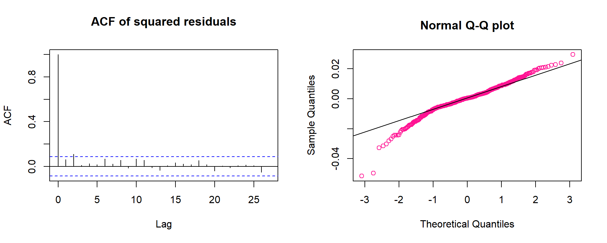
The AR(1)/GARCH(1,1)-\(t\) model has the lowest AIC. The ARCH(1) model only lets the variance depend on yesterday’s shock, so it cannot describe how long periods of high or low volatility last, and its AIC is higher. The AR(1) model with Gaussian errors is not adequate: it assumes a constant variance, but Figure 24 shows autocorrelation in the squared residuals (volatility clustering) and a Q-Q plot with tails far heavier than the normal distribution.
Reflection. This lab made the difference between the residual plots clear to me. The ACF of the raw squared residuals tells you whether the data have ARCH effects, while the ACF of the standardised squared residuals tells you whether your model has removed them. The Black Monday exercise was a good illustration of why the conditional distribution matters: the same forecast standard deviation gives probabilities that differ by many orders of magnitude under a normal and a \(t\) distribution.
Spectral Analysis
This is my work-through of Spectral Analysis in R. The tutorial’s helper functions are used throughout. The questions are answered in my own words, and I added the code for the figures that were not shown in the tutorial.
Setup and toolkit
Code
library(tidyverse)
library(patchwork)
col_obs = "deeppink" # the observed series
col_ref = "purple" # truth or reference line
col_bar = "grey50" # periodogram ordinates
# Raw periodogram at the Fourier frequencies j/n, j = 1, ..., floor(n/2).
# Element k + 1 of fft(y) corresponds to frequency k/n.
pgram = function(y, demean = TRUE) {
n = length(y)
if (demean) y = y - mean(y)
I = Mod(fft(y))^2 / n
j = 1:floor(n / 2)
tibble(freq = j / n, period = n / j, I = I[j + 1])
}
# Theoretical ARMA spectral density, unit innovation variance by default.
arma_spec = function(f, ar = numeric(0), ma = numeric(0), sigma2 = 1) {
vapply(f, function(ff) {
num = if (length(ma))
Mod(1 + sum(ma * exp(-2i * pi * ff * seq_along(ma))))^2 else 1
den = if (length(ar))
Mod(1 - sum(ar * exp(-2i * pi * ff * seq_along(ar))))^2 else 1
sigma2 * num / den
}, numeric(1))
}
# Fisher's exact test for the largest periodogram ordinate, white-noise null.
# g = max ordinate / sum of ordinates
# P(G > g) = sum_{k=1}^{floor(1/g)} (-1)^{k-1} choose(q, k) (1 - k g)^{q-1}
fisher_g_test = function(y) {
y = y - mean(y)
n = length(y)
I = Mod(fft(y))^2 / n
m = floor((n - 1) / 2) # ordinates that are exponential under H0
I = I[2:(m + 1)]
q = length(I)
g = max(I) / sum(I)
K = floor(1 / g)
k = 1:K
terms = (-1)^(k - 1) * exp(lchoose(q, k) + (q - 1) * log1p(-k * g))
p = min(max(sum(terms), 0), 1)
jmax = which.max(I)
list(g = g, p.value = p, freq = jmax / n, period = n / jmax)
}The question spectral analysis asks
The time domain asks how the past influences the present. The frequency domain asks which oscillations are present in the series and how much of the variance each of them explains. Both describe the same process, but some features (for example several cycles at once) are much easier to see in the frequency domain.
Question: a monthly series has a strong annual pattern. What period and frequency represent this cycle?
The period is \(m = 12\) months, so the frequency is \(f = 1/12 \approx 0.083\) cycles per month. When reporting, the period (“a twelve-month cycle”) is more meaningful than the frequency.
Period, frequency and the ts() collision
A sinusoid with period \(m\) has frequency \(f = 1/m\) cycles per observation and angular frequency \(\omega = 2\pi f = 2\pi/m\) radians per observation.
frequency in ts() is a period
In ts(y, frequency = 12) the frequency argument is the number of observations per cycle, which is the period \(m\), not the frequency \(f\). Passing frequency = 1/12 would tell R that the series is annual.
Code
monthly = ts(rnorm(60), frequency = 12)
quarterly = ts(rnorm(40), frequency = 4)
frequency(monthly) # 12 = the period m[1] 12Code
frequency(quarterly) # 4[1] 4Question: complete the frequency column.
Code
freq_tbl = tibble(
Data = c("Monthly", "Quarterly", "Hourly", "Daily"),
Cycle = c("Annual", "Annual", "Daily", "Weekly"),
`Period m` = c(12, 4, 24, 7)
) |>
mutate(`Frequency f = 1/m` = 1 / `Period m`,
`Check: 1/f` = 1 / `Frequency f = 1/m`)
kable(freq_tbl, digits = 4)| Data | Cycle | Period m | Frequency f = 1/m | Check: 1/f |
|---|---|---|---|---|
| Monthly | Annual | 12 | 0.0833 | 12 |
| Quarterly | Annual | 4 | 0.2500 | 4 |
| Hourly | Daily | 24 | 0.0417 | 24 |
| Daily | Weekly | 7 | 0.1429 | 7 |
Converting each frequency back to a period recovers \(m\), which is the check I should always do before reporting a result.
The Nyquist frequency and aliasing
At least two observations are needed per cycle (one near the peak and one near the trough), so the fastest oscillation a sampled series can show has a period of 2 observations. This is the Nyquist frequency, \(f_N = 1/2\) cycle per observation. Faster oscillations do not disappear: they are folded back into \([0, 1/2]\) and appear at a lower frequency (aliasing).
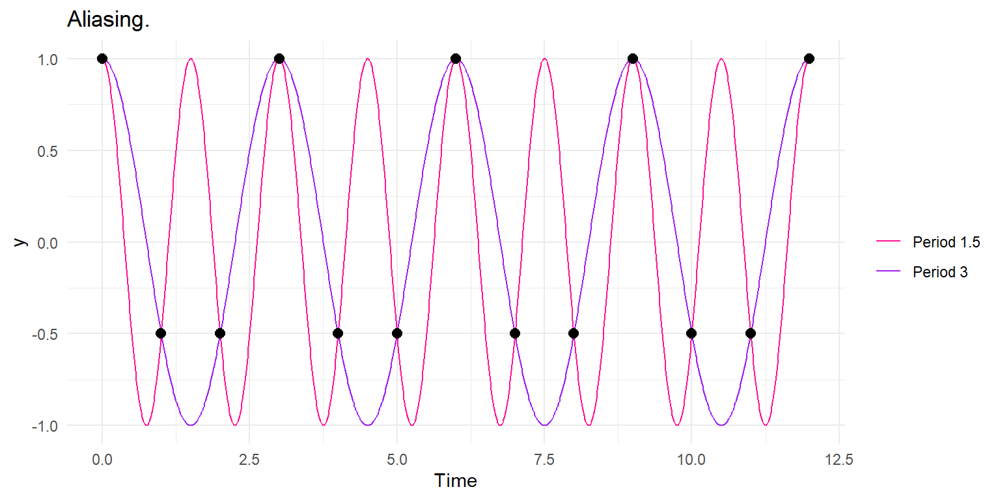
A period of 1.5 is a frequency of \(2/3\), which is above the Nyquist frequency. It is folded to \(|2/3 - 1| = 1/3\), the frequency of the period-3 wave, which is why the two waves agree at every sampled point in Figure 25.
Question: a process oscillates at 0.70 cycles per observation. Can it be resolved, and can a later analysis recover it?
No. The observable range is \(0 \leq f \leq 1/2\), so the oscillation appears at \(|0.70 - 1| = 0.30\) instead. It cannot be recovered afterwards, because the sampled values are exactly the same as those of a real 0.30 oscillation, so the information is simply not in the data. The sampling interval has to be chosen before collecting the data, with the fastest cycle of interest in mind.
A series as a sum of waves
A sinusoid with amplitude \(A\), frequency \(f\) and phase \(\varphi\) can be written as
\[ A\cos(2\pi f t + \varphi) = a\cos(2\pi f t) + b\sin(2\pi f t), \qquad A = \sqrt{a^2 + b^2}. \]
The right-hand side is linear in \(a\) and \(b\), so for a known frequency it is just a regression with two columns. At the Fourier frequencies \(f_j = j/n\) the sine and cosine columns are orthogonal, so the total sum of squares splits exactly across the frequencies. The periodogram is therefore an analysis of variance by frequency. The check below fits the regression at the frequency of a known cycle and compares it with the periodogram ordinate:
Code
set.seed(1)
n_demo = 120
t_demo = 1:n_demo
y_demo = 3 * cos(2 * pi * t_demo / 12 + 0.5) + rnorm(n_demo)
# Regression on the cosine and sine at f = 1/12:
fit_wave = lm(y_demo ~ cos(2 * pi * t_demo / 12) + sin(2 * pi * t_demo / 12))
A_hat = sqrt(sum(coef(fit_wave)[2:3]^2))
# Periodogram ordinate at f = 1/12 (j = 10):
I_12 = pgram(y_demo)$I[10]
c(amplitude_regression = A_hat,
amplitude_from_periodogram = sqrt(4 * I_12 / n_demo),
half_sum_of_squares = sum((y_demo - mean(y_demo))^2) / 2,
sum_of_ordinates = sum(pgram(y_demo)$I)) amplitude_regression amplitude_from_periodogram
3.130026 3.130026
half_sum_of_squares sum_of_ordinates
338.964811 339.102285 The amplitude from the regression is the same as the one implied by the periodogram ordinate (\(I(f_j) = nA^2/4\)), and the sum of the ordinates is about half the sum of squares, because pgram() only keeps the positive frequencies.
The periodogram
The periodogram \(I(f)\) measures how much of the variation in a series is carried by an oscillation at frequency \(f\). Its population version is the spectral density \(S(f)\), which spreads the variance of a stationary process over the frequencies. A tall ordinate at \(f = 1/12\) in monthly data means that a 12-month oscillation explains a large share of the variance.
spec.pgram() is the practical estimator. By default it removes a linear trend, tapers the ends, pads the series and rescales by frequency(x), so its numbers only match pgram() when these options are switched off.
Question: monthly data show a large ordinate at \(f = 0.0833\). What do you report?
The period, with units: \(1/0.0833 \approx 12\), so “an annual (twelve-month) cycle”.
A first worked example: a known cycle
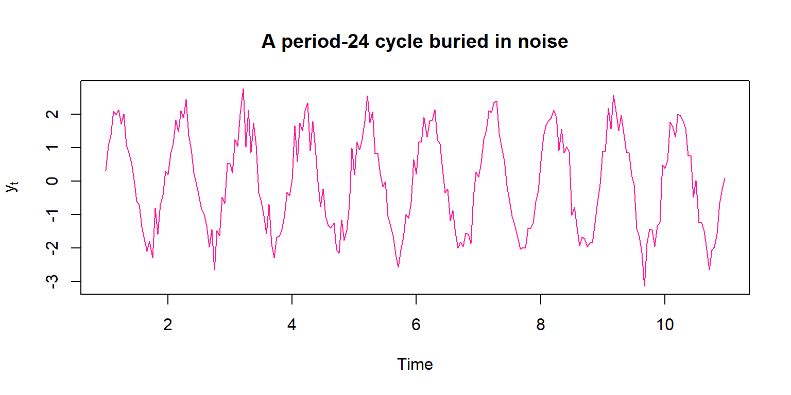
Figure 26 shows an obvious oscillation, but it is not easy to read off its exact length.
Question: which frequency should dominate the periodogram?
The period is 24, so I expect the peak at \(f = 1/24 \approx 0.0417\).
Code
pg_cyc = pgram(y_cyc)
pg_cyc |> slice_max(I, n = 5)# A tibble: 5 × 3
freq period I
<dbl> <dbl> <dbl>
1 0.0417 24 235.
2 0.5 2 0.671
3 0.121 8.28 0.615
4 0.404 2.47 0.513
5 0.396 2.53 0.497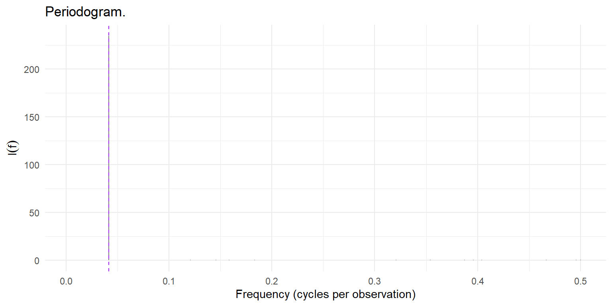
Question: what is the dominant frequency and period, and does it match the construction?
The largest ordinate is at \(f = 10/240 = 0.0417\), a period of 24 observations, which is exactly how the series was built. Since \(240/24 = 10\), the cycle lies exactly on a Fourier frequency, so all its power is in one ordinate. The other ordinates are tiny in comparison (Figure 27). The time plot showed an oscillation, but the periodogram tells us its length immediately.
The same analysis with spec.pgram()
Code
sp_cyc = spec.pgram(y_cyc, taper = 0, detrend = FALSE, fast = FALSE, plot = FALSE)
jmax = which.max(sp_cyc$spec)
c(peak_frequency = sp_cyc$freq[jmax],
peak_period = 1 / sp_cyc$freq[jmax])peak_frequency peak_period
0.04166667 24.00000000 With its defaults switched off, spec.pgram() finds the same peak. From here on I use spec.pgram(), because detrending, tapering and smoothing are exactly the steps a real analysis needs.
Reading a periodogram: five steps
Step 1: convert the peak to a period
Find the largest ordinate, invert its frequency and attach the units of the data.
Step 2: check for harmonics
A seasonal pattern that is not a pure sinusoid needs harmonics at \(2/m, 3/m, \dots\) to build its shape. The sharper the pattern, the more harmonics it needs.
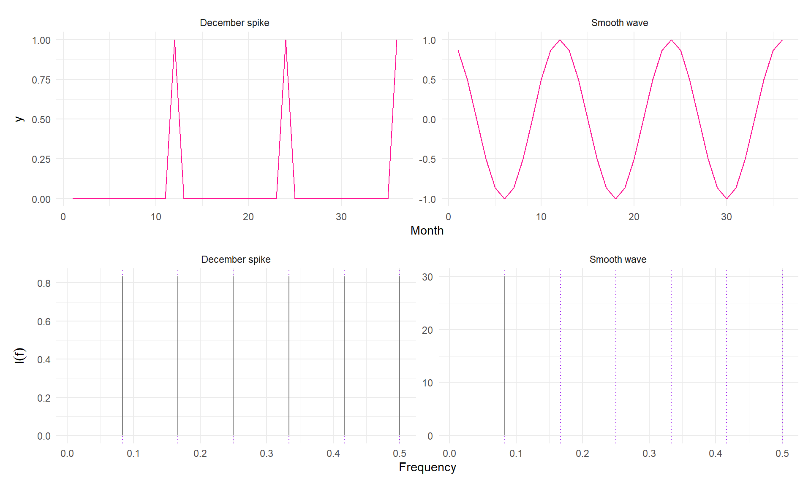
Question: a monthly series has large peaks at 1/12, 2/12 and 3/12. Are these three cycles of 12, 6 and 4 months?
Usually not. They are the fundamental (12 months) and the harmonics of one annual pattern that is not shaped like a sine wave. I would report a single twelve-month cycle and note that the 6- and 4-month peaks are its harmonics, as in the December-spike panel of Figure 28.
Step 3: do not trust a single tall ordinate
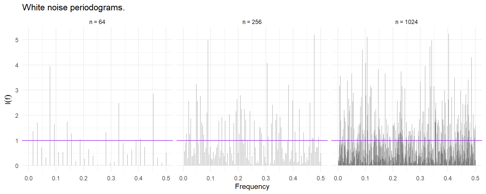
The raw periodogram is unbiased but not consistent
Each ordinate estimates \(S(f)\) correctly on average, but its standard deviation is about as large as its mean and does not shrink as \(n\) grows (Figure 29). For white noise each ordinate is approximately \(S(f)\) times an exponential random variable.
Question: one very tall peak in a raw periodogram. Does that prove a real cycle?
No. There are many ordinates and each one is very noisy, so some will always look large by chance. To separate real cycles from noise I need to smooth the spectrum (Step 4) and test the largest peak (Step 5).
Step 4: smooth, and keep what survives
Neighbouring ordinates estimate almost the same value of a smooth spectrum, so averaging them reduces the noise. In spec.pgram() the spans argument sets how many neighbours are averaged.

Question: what goes wrong if the span is too small or too large?
Too small: the estimate stays noisy and real features are hard to see (top left of Figure 30). Too large: neighbouring features are averaged together, so peaks are flattened and troughs filled in (spans = 31 is lower and wider at the peak than the true density). In practice I compare a few spans and trust the features that survive a moderate increase in smoothing.
Step 5: test the largest peak
Fisher’s test compares the largest ordinate with the sum of all of them, \(g = \max_j I(f_j)/\sum_j I(f_j)\), and its null distribution accounts for having picked the maximum.
Code
set.seed(2026)
fisher_g_test(rnorm(240)) # white noise: large p-value expected$g
[1] 0.04863759
$p.value
[1] 0.2936269
$freq
[1] 0.2166667
$period
[1] 4.615385Code
fisher_g_test(y_cyc) # the period-24 series: tiny p-value expected$g
[1] 0.9370008
$p.value
[1] 2.495038e-140
$freq
[1] 0.04166667
$period
[1] 24Question: what is the null hypothesis, and what does rejecting it mean?
The null hypothesis is that the series is white noise. Rejecting it is evidence of periodic structure compared to white noise. It does not prove that a particular (for example deterministic seasonal) model is correct. If the series is autocorrelated, the test can reject just because correlated noise does not have a flat spectrum. In that case the cycle should be tested on the residuals of a fitted ARMA model, and the p-value is then only approximate (see the topic exploration below).
Preparing a series
The three routine steps are all spec.pgram() defaults: remove the mean (and usually the trend), taper the ends, and (cosmetically) pad the series.
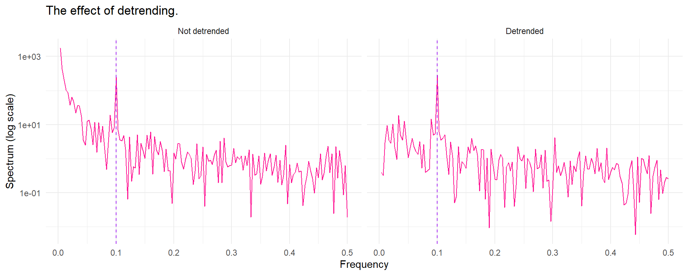
In Figure 31 the series also has a period-10 cycle (dashed line). Without detrending, the trend puts huge power at the lowest frequencies, which leaks into the neighbouring frequencies. After detrending, the low-frequency power drops and the cycle stands out more clearly.
Spectral signatures of familiar models

| Process | Shape of \(S(f)\) |
|---|---|
| White noise | Flat at every frequency |
| MA(1) | Monotone, sloping up or down |
| AR(1), \(\phi > 0\) | Power concentrated at low frequencies (“red”) |
| AR(1), \(\phi < 0\) | Power concentrated at high frequencies (“blue”) |
| AR(2), complex roots | A peak at an interior frequency |
| Seasonal | A narrow spike at \(1/m\) and its harmonics |
Question: match the shapes (A) flat, (B) power near \(f = 0\), (C) power near \(f = 1/2\), (D) a broad interior peak.
A is white noise, B is an AR(1) with positive \(\phi\), C is an AR(1) with negative \(\phi\), and D is an AR(2) with complex roots (Figure 32 and Table 2).
A cycle that is not seasonal
The AR(2) \(y_t = 1.5y_{t-1} - 0.75y_{t-2} + \varepsilon_t\) has complex roots and a spectral peak at about \(f \approx 0.08\), a period of about 12.4 observations:
Code
f_peak = f_grid[which.max(arma_spec(f_grid, ar = c(1.5, -0.75)))]
c(peak_frequency = f_peak, peak_period = 1 / f_peak)peak_frequency peak_period
0.08 12.50 Question: would a periodogram peak near twelve months prove deterministic annual seasonality?
No. An AR(2) with complex roots also gives a peak near 12 months, but its cycles vary in length from one cycle to the next and are not tied to the calendar. The width of the peak is the difference: a stochastic cycle gives a broad peak, while a deterministic seasonal pattern gives a narrow spike at \(1/m\) (plus its harmonics).
What differencing does to a spectrum
Filtering a series multiplies its spectrum by a fixed curve. For the first difference \((1-L)\) the curve is \(|1 - e^{-2\pi i f}|^2 = 4\sin^2(\pi f)\), and for the seasonal difference \((1 - L^{12})\) it is \(4\sin^2(12\pi f)\).
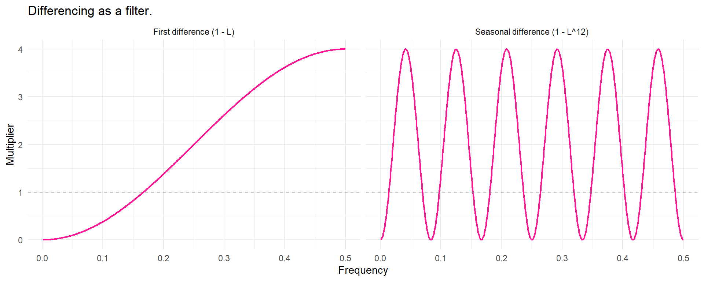
The first difference multiplies the power at \(f = 0\) by zero (it removes the level and strongly damps a trend), but it multiplies the power at \(f = 1/2\) by four. The seasonal difference has zeros at \(f = 0, 1/12, 2/12, \dots, 6/12\), so it removes the level and every seasonal harmonic (Figure 33).
Code
# Over-differencing white noise:
set.seed(5)
wn = rnorm(10000)
d_wn = diff(wn)
c(var_white_noise = var(wn),
var_differenced = var(d_wn),
acf_lag1_differenced = acf(d_wn, plot = FALSE)$acf[2]) var_white_noise var_differenced acf_lag1_differenced
1.0246455 2.0695043 -0.5066899 Question: why is unnecessary differencing harmful, not just unhelpful?
Differencing is a filter, not just a trend remover: it removes low-frequency variation and amplifies high-frequency variation. If there is no trend, it removes a component that was not there and amplifies the fastest, least informative variation. Differencing white noise doubles the variance and creates a lag 1 autocorrelation of \(-0.5\) (the output above), i.e. an MA(1) with \(\theta = -1\), which is not invertible.
The frequency domain versus the ACF
| Question | Time domain | Frequency domain |
|---|---|---|
| Is there dependence? | ACF and PACF | The spectrum is not flat |
| How long is the cycle? | Awkward, from ACF peaks | Directly, from a spectral peak |
| Is the cycle regular? | Hard to judge | The width of the peak |
| Several cycles at once? | Very hard | Immediate |
| Which model should I fit? | ACF/PACF identification | Not directly |
| Forecast the next value | Directly, via a model | Not directly |
| Non-stationary series | Differencing, transformations | Requires stationarity |
The two domains contain the same information (the spectral density is the Fourier transform of the autocovariance function), but Table 3 shows that they make different questions easy. The frequency domain describes, but does not extrapolate, which is why ARIMA models are used for forecasting.
Question: a series has cycles of roughly 7, 30 and 365 observations. Which representation makes these easier to see?
The frequency domain. The three cycles appear as three separate peaks at \(1/7\), \(1/30\) and \(1/365\), whereas the overlapping patterns in an ACF would be almost impossible to untangle.
Integrated exercise
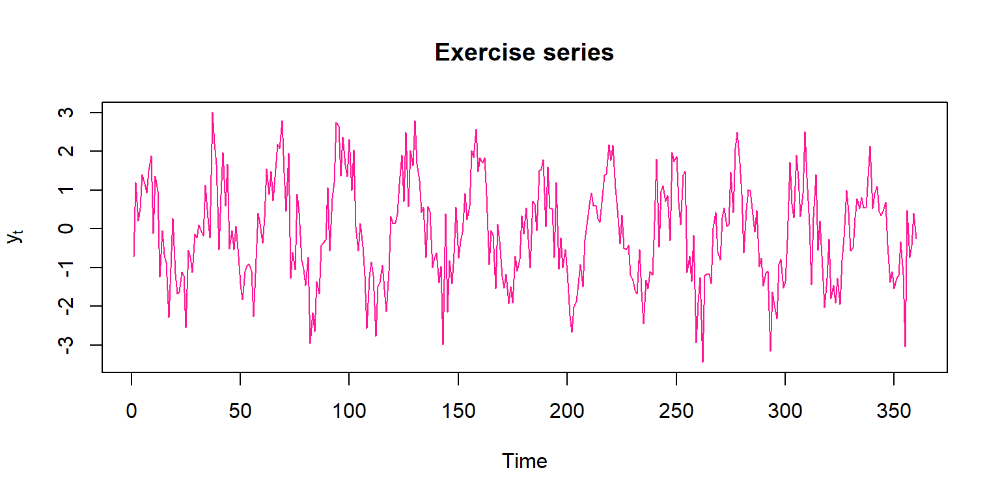
Task 1: predict, then read the periodogram.
Code
pg = pgram(y)
pg |> slice_max(I, n = 5)# A tibble: 5 × 3
freq period I
<dbl> <dbl> <dbl>
1 0.0333 30 203.
2 0.261 3.83 3.32
3 0.1 10 2.92
4 0.231 4.34 2.53
5 0.272 3.67 2.23
The largest ordinate is at \(f = 12/360 = 0.0333\), a period of 30 observations (Figure 35). Since \(360/30 = 12\), the cycle again lies exactly on a Fourier frequency. The next largest ordinates are about 60 times smaller. In the time plot (Figure 34) I could see that there is a cycle, but not its exact length.
Task 2: smooth at two spans.
Code
sp9 = spec.pgram(y, spans = 9, taper = 0.1, detrend = TRUE, fast = FALSE, plot = FALSE)
sp15 = spec.pgram(y, spans = 15, taper = 0.1, detrend = TRUE, fast = FALSE, plot = FALSE)
par(mfrow = c(2, 1))
plot(sp9$freq, sp9$spec, type = "l", log = "y", col = col_obs,
main = "Smoothed (spans = 9)", xlab = "Frequency", ylab = "Spectral density")
abline(v = 1 / 30, lty = 2, col = col_ref)
plot(sp15$freq, sp15$spec, type = "l", log = "y", col = col_obs,
main = "More smoothing (spans = 15)", xlab = "Frequency", ylab = "Spectral density")
abline(v = 1 / 30, lty = 2, col = col_ref)
par(mfrow = c(1, 1))
The peak near \(1/30\) survives the heavier smoothing (Figure 36). It becomes wider and a bit lower, but it is still far above the rest of the spectrum, which is roughly flat. Comparing two spans is the point: a real feature persists when the smoothing is increased a little, while a bump caused by noise tends to disappear.
Task 3: formal test.
Code
fisher_g_test(y)$g
[1] 0.6690766
$p.value
[1] 5.812113e-84
$freq
[1] 0.03333333
$period
[1] 30Fisher’s test rejects white noise with a tiny p-value, and the largest ordinate is at a period of 30. The test adds a formal statement that the largest ordinate is too large to be a chance maximum under white noise. The smoothed spectrum adds where the feature is and how broad it is.
Final interpretation. The spectrum has one dominant periodic component at about 0.033 cycles per observation, a cycle of about 30 observations. It survives moderate smoothing, so it is not a single noisy ordinate, and Fisher’s test gives strong evidence against white noise. The rest of the spectrum is flat, which is consistent with white noise around the cycle. Since the noise appears to be white, I do not need to prewhiten the series before testing.
Applying the routine to AirPassengers
To try the five steps on real data, I used the log of AirPassengers, detrended with a linear regression (the spectrum needs a stationary series).
Code
# Log, then remove a linear trend:
log_ap = as.numeric(log(AirPassengers))
t_ap = seq_along(log_ap)
ap_detrended = residuals(lm(log_ap ~ t_ap))
pgram(ap_detrended) |> slice_max(I, n = 6)# A tibble: 6 × 3
freq period I
<dbl> <dbl> <dbl>
1 0.0833 12 0.812
2 0.167 6 0.241
3 0.00694 144 0.0811
4 0.333 3 0.0413
5 0.0208 48 0.0362
6 0.25 4 0.0296Code
fisher_g_test(ap_detrended)$g
[1] 0.5916605
$p.value
[1] 4.195251e-26
$freq
13
0.08333333
$period
13
12 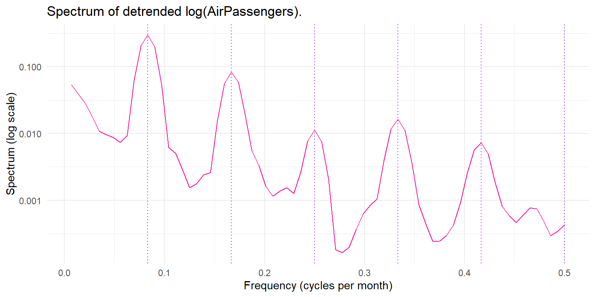
The largest ordinate is at a period of 12 months, and the next largest are at 6, 3 and 4 months (Figure 37). Following Step 2, these are the harmonics of one annual pattern: the passenger seasonal pattern has a sharp summer peak, which a single sine wave cannot describe. I used as.numeric() on purpose: for a ts object with frequency = 12, spec.pgram() rescales the frequency axis to cycles per year, so the annual peak would appear at 1 instead of 1/12. There is also some power at the very lowest frequencies, which is the curvature in the trend that a straight line does not remove.
Topic exploration: is the lynx cycle a real cycle?
The tutorial warns that Fisher’s test can reject white noise just because a series is autocorrelated, and that a cycle should be tested on the residuals of a fitted ARMA model. I wanted to see this on real data. The lynx data set (annual Canadian lynx trappings, 1821–1934) has a famous cycle of about ten years, but it is not tied to the calendar, so it might be a stochastic cycle (like the AR(2) above) rather than a deterministic one.
Code
log_lynx = log10(lynx)
# 1. Fisher's test on the series itself:
fisher_lynx = fisher_g_test(as.numeric(log_lynx))
# 2. Fit an AR(2) and test its residuals (prewhitening):
ar2_lynx = arima(log_lynx, order = c(2, 0, 0))
fisher_resid = fisher_g_test(as.numeric(residuals(ar2_lynx)))
# Peak of the fitted AR(2) spectrum:
phi_lynx = coef(ar2_lynx)[c("ar1", "ar2")]
f_lynx = f_grid[which.max(arma_spec(f_grid, ar = phi_lynx))]
kable(data.frame(
Test = c("log10(lynx)", "AR(2) residuals"),
g = c(fisher_lynx$g, fisher_resid$g),
`p-value` = c(fisher_lynx$p.value, fisher_resid$p.value),
`Period of largest ordinate (years)` = c(fisher_lynx$period, fisher_resid$period),
check.names = FALSE
), digits = 4)| Test | g | p-value | Period of largest ordinate (years) |
|---|---|---|---|
| log10(lynx) | 0.5967 | 0.0000 | 9.5 |
| AR(2) residuals | 0.0973 | 0.1908 | 9.5 |
Code
c(phi_lynx, AR2_peak_period = 1 / f_lynx) ar1 ar2 AR2_peak_period
1.3776054 -0.7398758 10.0000000 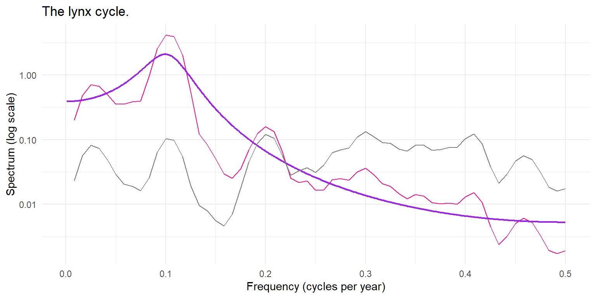
On the series itself, Fisher’s test rejects white noise very strongly, with the largest ordinate at a period of about 9.5 years. But the fitted AR(2) has complex roots and a spectral peak at a period of about 10 years, and its spectral density follows the shape of the estimated spectrum (Figure 38). After removing the AR(2) dependence, the residual spectrum is roughly flat and Fisher’s test no longer rejects (p = 0.19).
So the ten-year lynx cycle is real, but it is well described as a stochastic cycle produced by AR(2) dynamics (which fits the predator-prey story: the population overshoots and then crashes), not as a fixed sinusoid. A deterministic model (for example a regression on a 10-year sine and cosine) would be the wrong model, because the cycle length varies from cycle to cycle. This also shows why the test on the raw series is misleading on its own: it rejects white noise, but that does not tell us what kind of periodic structure is present. The residual p-value is only approximate, because the AR(2) parameters were estimated from the same data.
Reflection
The main thing I learned from this tutorial is that the periodogram is just a way of splitting the variance of a series by frequency, and that the raw periodogram is a very noisy estimate of the spectrum. I would previously have trusted a single tall peak. The harmonics were also new to me: I would have read the 6- and 4-month peaks of AirPassengers as separate cycles. The most difficult part was the scaling conventions (pgram() vs spec.pgram(), one-sided vs two-sided spectra, and the frequency argument of ts()), because the same series can give numbers that differ by constant factors. The lynx exploration connected the frequency domain back to the ARMA models from earlier in this section: a broad spectral peak can be produced by an AR(2), so finding a cycle in the spectrum does not by itself mean the cycle is deterministic.